La actividad está confirmada. La fecha del jueves 20 se calcula con el horario habitual y permanece por confirmar.
Microbiología II · TeóricaConfirmadaEstudiar las tiñas y tres micosis subcutáneasPróxima clase estimadaPróxima clase de Microbiología II
Repasar las tiñas y estudiar esporotricosis linfocutánea, cromoblastomicosis y micetoma eumicótico para iniciar la próxima clase con casos clínicos.
¿Por qué aparece aquí?
La profesora pidió esta tarea. Como no dijo la fecha, usamos el horario habitual del lunes. Falta confirmarla.
Microbiología II · Práctica · Grupo 3ConfirmadaLlevar una muestra de alimento con mohoPróxima práctica estimadaPróximo laboratorio del Grupo 3
Preferir pan duro con crecimiento visible. También se mencionaron naranja sólida, tomate, banana o queso; evitar muestras totalmente líquidas.
El 14/08 la profesora indicó estudiar la regulación durante el fin de semana, pero no anunció una entrega obligatoria ni una fecha formal.
Epidemiología y Salud PúblicaEstimadaLeer el triage por coloresPróxima clase estimadaPróxima clase de Epidemiología
Revisar los cinco niveles del RAC: color, prioridad, tiempo máximo y situaciones que necesitan atención rápida.
¿Por qué aparece aquí?
La profesora pidió leer este material para la próxima clase, pero no dijo la fecha exacta. Por eso aparece como estimada.
¿De dónde sale esta fecha?
Si el profesor dio una fecha, usamos esa fecha.
Si no dio una fecha, usamos el horario habitual de la materia.
Una fecha calculada aparece como «estimada» hasta que se confirme.
Comprueba siempre los avisos oficiales de la facultad.
TAREAS ANTERIORES
Tareas anteriores
Aquí puedes volver a ver las tareas antiguas. Marca solo tus propias hojas firmadas; se guarda en este dispositivo.
0/2 copias firmadas
NUTRICIÓNTareas de la materiaLas tareas terminadas aparecerán aquí.0 tareas
Todavía no hay tareas anteriores.El seminario sigue arriba, en «Tareas actuales», hasta que se complete.
FISIOLOGÍA IITareas de la materiaLas tareas terminadas aparecerán aquí.0 tareas
Todavía no hay tareas anteriores.Cuando haya una tarea, se guardará aquí dentro de esta materia.
BIOQUÍMICA II1 tarea anteriorAbre la materia y elige la tarea que necesitas.1 tarea
01ACTIVIDAD 1 · REALIZADA EN CLASEGLUT4, ejercicio y glucemiaAbre para volver a ver las 3 preguntas.Firma sin marcar
REALIZADA EN CLASEConservar la hoja para cuando la docente solicite todas las actividades.
Diseña el proceso de funcionamiento dependiente de insulina del GLUT4.
Explica bioquímicamente por qué el ejercicio físico es beneficioso para pacientes con resistencia a la insulina y diabetes tipo 1 y 2.
Si el ejercicio activa la entrada de glucosa al músculo a través de GLUT4 y por lógica debería bajar la glicemia, ¿por qué un paciente con diabetes tipo 1 que hizo un entrenamiento de pesas muy pesado o ejercicios de alta intensidad puede terminar con la glucosa más alta que cuando empezó? ¿Qué vía hormonal y hepática se activó que le ganó la carrera a los GLUT4?
EPIDEMIOLOGÍA Y SALUD PÚBLICA1 tarea anteriorAbre la materia y elige la tarea que necesitas.1 tarea
01ACTIVIDAD 1 · REALIZADA EN CLASESalud, sistemas sanitarios y Unidad de Salud FamiliarAbre para volver a ver las 11 preguntas.Firma sin marcar
REALIZADA EN CLASEConservar la hoja para el examen o la entrega acumulada que indique la docente.
¿Qué es la salud según la OMS?
¿Qué es la salud según Terris?
¿Qué es la salud pública?
¿Cómo está formada una Unidad de Salud Familiar?
Tipos de USF.
Tipos de sistemas sanitarios.
Diferencia entre medicina social e individual.
La salud de la persona depende de…
El sistema de salud debe ser…
¿Cuáles son los niveles de prevención en salud pública?
Cita enfoques de la USF.
MICROBIOLOGÍA II · TEÓRICATareas de la materiaLas tareas terminadas aparecerán aquí.0 tareas
Todavía no hay tareas anteriores.El estudio de micosis sigue arriba mientras sea una tarea actual.
MICROBIOLOGÍA II · PRÁCTICATareas de la materiaLas tareas terminadas aparecerán aquí.0 tareas
Todavía no hay tareas anteriores.La muestra con moho sigue arriba mientras sea una tarea actual.
4.º E
Materias
Abre una materia y continúa directamente en su cuaderno.
Leyes de la alimentación y evaluación del paciente
La sesión se estima el jueves 13 de agosto de 2026 por el horario recibido. La fecha no fue pronunciada y permanece por confirmar.
Clase estimada · 13 ago. · confirmar
13 AGO · ESTIMADA
Cantidad, calidad, armonía, adecuación y variedadCómo analizar una alimentación, adaptarla al paciente y distinguir alimentos fuente, protectores, enriquecidos y fortificados.
ACTUAL
✓Seminario presentado el 20 de agosto. No hubo una nueva clase teórica de Nutrición; el cuaderno conserva la sesión del 13 de agosto.
IDEA CENTRAL
Una dieta no se juzga solo por sus calorías
La evaluación clínica combina suficiencia energética, densidad nutricional, proporciones, contexto individual y variedad. Una dimensión aislada no basta.
01CuántoCantidad
02QuéCalidad
03En qué proporciónArmonía
04Para quiénAdecuación
05Con qué diversidadVariedad
VOLUNTARIAAlimentación
Elección, preparación e ingestión de alimentos: qué, cuándo y cómo comemos.
FISIOLÓGICANutrición
Digestión, absorción, transporte, metabolismo y utilización de nutrientes.
PATRÓNDieta
Conjunto habitual de alimentos y bebidas. Toda persona tiene una dieta, sea adecuada o no.
LEYES DE PEDRO ESCUDEROCuatro reglas clásicas; la variedad añade una quinta idea útil.
01 · CANTIDADSuficiente, sin déficit ni exceso
La energía y los nutrientes deben cubrir necesidades que cambian con edad, sexo, tamaño corporal, actividad, estado fisiológico y enfermedad.
Pregunta clínica: ¿la ingesta corresponde al gasto y al objetivo?02 · CALIDAD
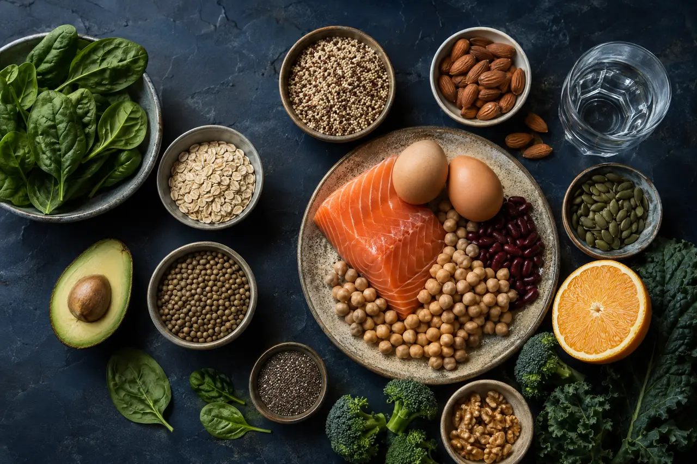
Todos los nutrientes necesarios
No basta alcanzar calorías. Hay que revisar proteínas, carbohidratos, grasas, fibra, agua, vitaminas y minerales.
Pregunta clínica: ¿qué alimentos construyen esas calorías?03 · ARMONÍA
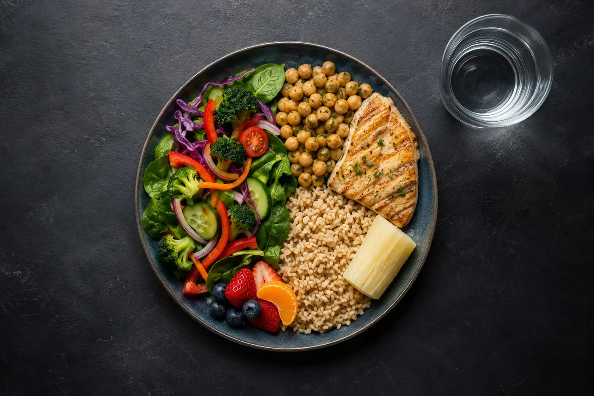
Proporción y equilibrio
Los grupos de alimentos deben guardar relación entre sí; ni una ensalada sola ni un plato dominado por almidones es completo.
Pregunta clínica: ¿qué grupo ocupa demasiado o falta?04 · ADECUACIÓN
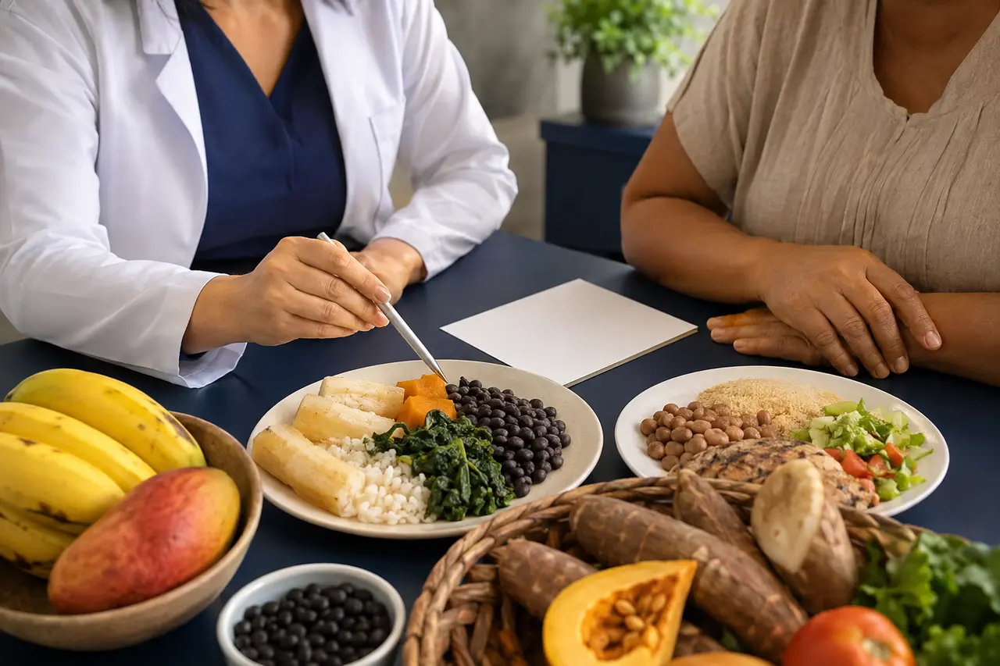
Adaptada a la persona real
Considera etapa de vida, patología, cultura, preferencias, economía, disponibilidad, dentición, deglución y capacidad para preparar alimentos.
Pregunta clínica: ¿el plan se puede comer, pagar y sostener?PRINCIPIO COMPLEMENTARIO · VARIEDAD
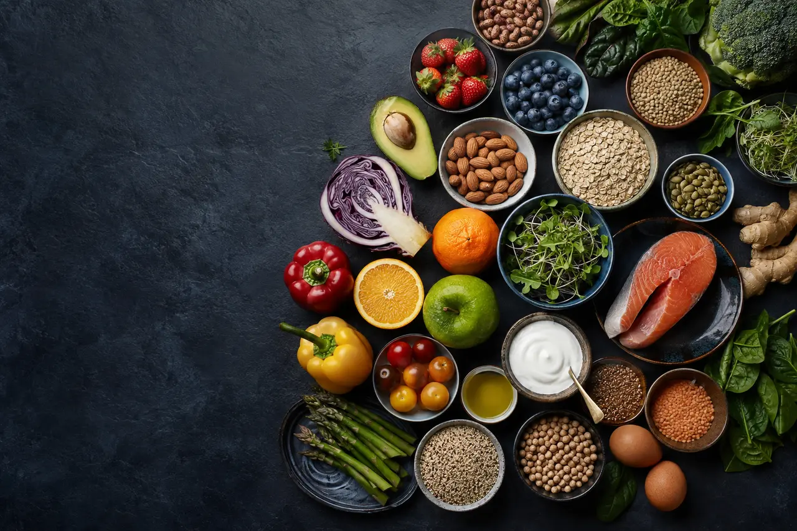
Rotar alimentos dentro y entre grupos
La diversidad semanal reduce monotonía y amplía la probabilidad de cubrir micronutrientes. Los colores ayudan a enseñar, pero no reemplazan una evaluación nutricional.
Estrategia de clase: introducir cambios graduales, no pasar de cero a cien.
BALANCE ENERGÉTICO
La tendencia del peso depende del balance acumulado
Si la ingesta energética supera de forma sostenida al gasto, se favorece el almacenamiento; si queda por debajo, se movilizan reservas. El peso diario también cambia por agua, glucógeno, contenido intestinal y adaptación metabólica.
INGESTA−GASTO=BALANCE
TÉCNICA DEL PLATOGuía visual, no prescripción universal.
½Verduras y frutasPriorizar variedad; en comidas principales suele predominar la verdura.
¼ProteínasAnimal o vegetal.
¼Cereales o tubérculosPreferir opciones menos refinadas cuando sea posible.
AGUABebida principalAjustar por clima, actividad, dieta y condición clínica.GRASASPreferir insaturadasAceite, aguacate, maní, nueces o semillas en cantidad acorde al objetivo.CONTEXTO LOCALAdaptar sin borrar la culturaMandioca, arroz, porotos, carnes y preparaciones regionales pueden reorganizarse en proporciones útiles.
ENERGÉTICOSPrincipalmente carbohidratos y grasasPan, arroz, mandioca, avena y aceites. Su función predominante no elimina sus demás nutrientes.CONSTRUCTORESAlimentos ricos en proteínasCarnes, huevos, lácteos y legumbres; sostienen síntesis y reparación tisular.REGULADORES / PROTECTORESFrutas, verduras, legumbres y aguaAportan fibra, vitaminas, minerales y compuestos bioactivos; no “curan” por sí solos.AFECTIVOSLa comida también tiene significadoPlacer, memoria y cultura influyen en adherencia. El objetivo es negociar porciones y combinaciones, no prohibir automáticamente.
TABLAVer tablaToca para abrir. Después, desliza a los lados.+
Alimento o grupo
Nutriente destacado
Lectura correcta
Lácteos
Calcio y proteína
“Fuente” indica un aporte característico, no que sea el único nutriente presente.
Carnes y vísceras
Proteína, hierro hemo y vitamina B12
El hígado es muy concentrado en micronutrientes; frecuencia y porción se individualizan.
Cítricos
Vitamina C
La vitamina C también mejora la absorción del hierro no hemo de la misma comida.
Banana
Potasio
No es la única fuente de potasio; legumbres, tubérculos y otras frutas también aportan.
Maíz para palomitas
Carbohidrato integral y fibra
La densidad energética final depende del aceite, manteca, azúcar y sal añadidos.
DEFINICIÓN DIDÁCTICAEnriquecido
En clase se usa para describir la reposición de nutrientes perdidos durante el procesamiento, como vitaminas del grupo B y hierro en harinas refinadas.
DEFINICIÓN DIDÁCTICAFortificado
Adición deliberada de uno o más micronutrientes para elevar el valor nutricional o responder a un problema de salud pública, estén o no originalmente en el alimento.
NO CONFUNDIRBiofortificado
El cultivo aumenta su contenido nutricional durante el crecimiento mediante selección, mejoramiento o prácticas agronómicas, no por adición posterior en fábrica.
ADECUACIÓN EN LA PRÁCTICA
El mismo consejo no sirve para todos
Antes de prescribir, identifica el problema nutricional, la capacidad funcional y el contexto del paciente.
EmbarazoObjetivo de ganancia según IMC pregestacional, evolución fetal y control obstétrico; vigilar hierro, folato y otros requerimientos.AdolescenciaAlta demanda por crecimiento; cuidar energía, proteína, calcio, hierro y hábitos sin estigmatizar.Adulto mayorRevisar apetito, dentición, sarcopenia, comorbilidades, fármacos, hidratación y deglución.DisfagiaTextura y viscosidad se adaptan tras evaluación; vigilar aspiración y densidad nutricional.
CASO DE CLASE · RAZONAMIENTO
Café azucarado y pan como base del día
Con una historia incompleta no se puede afirmar si la cantidad energética es suficiente. Sí puede sospecharse mala calidad, escasa armonía y variedad, y falta de adecuación a necesidades clínicas.
Cuantificar porciones, horarios y bebidas de todo el día.
Buscar proteínas, frutas, verduras, fibra y agua.
Preguntar por economía, preferencias, actividad y enfermedades.
Negociar uno o dos cambios posibles y revisarlos después.
TAREA OFICIAL · SEMANA 3 · 17–23 AGO. 2026
Seminario / presentación oral
Hay que entregar 3 cosas: dos presentaciones PowerPoint independientes y un informe breve para firma y sello. Elige tu grupo para ver los dos temas exactos.
Selecciona del Grupo 1 al Grupo 6 para mostrar tus dos temas.
QUÉ HAY QUE ENTREGAR2 PPT + 1 informeTres archivos o documentos claramente separados.DIAPOSITIVASHasta 4 por PPTEl límite sugerido se aplica a cada PowerPoint.DURACIÓNHasta 5 minutosExposición breve por grupo, según la organización de clase.COMIDAOpcionalPuede sustituirse por imágenes claras; no es necesario gastar de más.
01 · TRABAJO 1Guías Alimentarias
Presentación PowerPoint independiente con el tema asignado.
Fuente oficial: materiales bibliográficos del INAN entregados para el seminario.02 · TRABAJO 2Platos típicos / regiones
Segunda presentación PowerPoint independiente con investigación del grupo.
Incluir contexto cultural y un análisis nutricional breve.03 · DOCUMENTO FINALInforme breve
Primera página con título e integrantes, desarrollo de los dos trabajos y fuentes utilizadas.
Presentarlo para firma y sello; podrá subirse a la plataforma.
DOCUMENTOS DE LA DOCENTEUsa los archivos oficiales para preparar y entregar
01Qué debe contener cada trabajoGuía práctica para no olvidar ningún apartado
TRABAJO 1 · GUÍAS ALIMENTARIAS
Explicar el mensaje y su aplicación
Tema asignado.
Objetivo o mensaje principal.
Público al que va dirigido.
Puntos más importantes.
Ejemplos o aplicaciones prácticas.
Fuente principal: Bibliografía → INAN.
TRABAJO 2 · PLATOS / REGIONES
Relacionar cultura y nutrición
Región o plato asignado.
Contexto cultural o tradicional.
Ingredientes y preparación general.
Importancia cultural.
Imagen o plato preparado, si es posible.
Análisis nutricional breve y conclusión.
02Informe para firma y selloEl documento que debe guardar el grupo
ESTRUCTURA OBLIGATORIA
Un informe corto que reúna los dos trabajos
Primera página: título e integrantes.
Desarrollo breve del Trabajo 1.
Desarrollo breve del Trabajo 2.
Fuentes utilizadas.
03Cómo se califica · 5 puntos5 partes de 1 punto cada una
1 PUNTOFuentes utilizadasFuentes científicas u oficiales, actuales y pertinentes.1 PUNTOInforme escritoOrganización, coherencia, redacción, ortografía y presentación.1 PUNTOExposición oralDominio, claridad, seguridad y participación equilibrada.1 PUNTOPlato o apoyo visualRepresentatividad, organización e higiene/estética.1 PUNTOAnálisis y conclusiónExplicación nutricional breve, correcta y fundamentada.
Escala: 4,50–5 excelente · 4,00–4,49 muy bueno · 3,00–3,99 bueno · 2,00–2,99 regular · menos de 2 insuficiente.
04Organización y presentaciónCómo repartir el trabajo sin perder puntos
GRUPOMismo grupo o división interna
El grupo puede mantener a los mismos integrantes para ambos trabajos o repartirse internamente. Todos los temas deben presentarse y todos los integrantes deben participar de alguna forma.
POWERPOINTBreve, visual y entendible
Usar palabras clave, imágenes claras y poco texto. No leer párrafos largos. Se evalúa la explicación, no la cantidad de diapositivas.
IMPORTANTELos trabajos son independientes
No es necesario relacionar las Guías Alimentarias con los platos típicos o las regiones en una misma exposición.
Clase del jueves 20 de agosto de 2026: potencial de acción, sinapsis, receptores, transducción y aplicaciones clínicas.
Clase confirmada · 20 ago.
FISIOLOGÍA II · 20 AGO. 2026
Del potencial de acción a la percepción
Resolución razonada de los ejercicios de fijación: organización del sistema nervioso, conducción, sinapsis, receptores sensitivos y dos aplicaciones clínicas.
SOPORTEPDF de la cátedra · 13 páginas
MÉTODORelacionar mecanismo → efecto
ENTRENAMIENTO20 QCM · 10 V/F · 10 casos
CURSO COMPLETO
Del estímulo a la respuesta nerviosa
Esta clase se entiende como un recorrido continuo. Primero se ubica dónde entra y se procesa la información; después se sigue el impulso por la neurona, se observa cómo cruza la sinapsis y, al final, se aplica toda la secuencia a la sensibilidad y a dos situaciones clínicas.
01 · ORGANIZACIÓN
El SNC integra y el SNP mantiene la comunicación
El punto de partida es separar las estructuras que procesan la información de las que la transportan. El encéfalo y la médula espinal forman el sistema nervioso central; allí se recibe, compara e integra la información necesaria para elaborar una respuesta.
Los nervios y ganglios pertenecen al sistema nervioso periférico. Las vías aferentes conducen la información sensitiva hacia el SNC, mientras que las vías eferentes llevan la respuesta hacia los efectores. Esa salida puede ser somática o autónoma según el órgano y el tipo de control implicado.
02 · POTENCIAL DE ACCIÓN
El impulso comienza cuando la membrana alcanza el umbral
Cuando un estímulo lleva la membrana al umbral, la apertura de canales de Na⁺ dependientes de voltaje permite una entrada rápida de sodio y produce la despolarización. Después, la inactivación de esos canales y la salida de K⁺ conducen a la repolarización.
El potencial de acción responde a la ley de todo o nada: una vez iniciado, no aumenta su amplitud porque el estímulo sea más intenso. La intensidad se representa principalmente mediante la frecuencia de descarga. Con el impulso ya generado, la siguiente pregunta es cómo consigue avanzar sin perderse a lo largo del axón.
03 · CONDUCCIÓN
El diámetro y la mielina determinan la velocidad
Un axón de mayor diámetro ofrece menos resistencia interna al desplazamiento de la corriente. La mielina añade otra ventaja: concentra la regeneración del potencial de acción en los nodos de Ranvier, de modo que la señal parece saltar de un nodo al siguiente.
Esta conducción saltatoria es más rápida y energéticamente más eficiente que la propagación continua de una fibra no mielinizada. Al llegar al terminal axónico, la señal eléctrica debe transformarse para comunicarse con otra célula.
04 · SINAPSIS
La entrada de Ca²⁺ convierte la señal eléctrica en señal química
En una sinapsis química, la llegada del potencial de acción despolariza la terminal presináptica y abre canales de Ca²⁺. El calcio desencadena la fusión de las vesículas con la membrana y la liberación del neurotransmisor en la hendidura sináptica.
El neurotransmisor se une después a receptores postsinápticos. Los receptores ionotrópicos producen una respuesta directa y rápida; los metabotrópicos actúan mediante intermediarios. Los potenciales excitadores e inhibidores se suman, y el resultado de esa integración determina si la neurona postsináptica alcanza su propio umbral.
05 · TRANSDUCCIÓN SENSITIVA
El receptor convierte una forma de energía en señal nerviosa
Los receptores sensitivos no responden todos al mismo estímulo. Mecanorreceptores, termorreceptores, nociceptores, quimiorreceptores y fotorreceptores están especializados en modalidades diferentes y transforman el estímulo adecuado en un potencial receptor.
La adaptación también modifica la información enviada: los receptores tónicos mantienen la descarga y describen la persistencia del estímulo, mientras que los receptores fásicos destacan sobre todo sus cambios. Así, el SNC recibe no solo la presencia del estímulo, sino también su evolución temporal.
06 · APLICACIÓN CLÍNICA
La quemadura activa la vía; la lidocaína interrumpe su propagación
En una quemadura, el daño tisular activa nociceptores. La señal entra por vías aferentes, se integra en el sistema nervioso central y participa tanto en la percepción dolorosa como en la organización de respuestas protectoras.
La lidocaína actúa en otro punto de la secuencia: bloquea canales de Na⁺ dependientes de voltaje. Sin la entrada de sodio necesaria para despolarizar la membrana, el potencial de acción no se propaga correctamente y la información dolorosa deja de avanzar por la fibra.
Base exacta: «Ejercicios de fijación sistema nervioso», 13 páginas. La explicación ordena las consignas sin atribuir contenido a otra sesión.
FICHA RÁPIDA · 5 MIN
Mapa para responder sin memorizar frases
SEÑALNa⁺ entra · K⁺ saleDespolarización y repolarización del potencial.VELOCIDADMielina + diámetroLa conducción saltatoria acelera la propagación.SINAPSISCa²⁺ → exocitosisEl receptor define excitación o inhibición.TRANSDUCCIÓNEstímulo → potencial receptorLa modalidad depende del receptor activado.ADAPTACIÓNTónico vs fásicoPersistencia frente a detección del cambio.LIDOCAÍNABloquea canal de Na⁺Interrumpe la propagación del impulso doloroso.
FICHA ULTRA RÁPIDA · 90 S
Lo que no debes confundir
Aferencia entra al SNC; eferencia sale hacia el efector.
El potencial mantiene su amplitud; cambia la frecuencia de descarga.
Ca²⁺ presináptico desencadena la liberación del neurotransmisor.
Ionotrópico es directo y rápido; metabotrópico usa intermediarios.
Lidocaína bloquea Na⁺ voltaje-dependiente, no el receptor sensitivo.
ENTRENAMIENTO
40 preguntas ancladas a esta guía
MATERIAL DE LA CLASE
PDF original y vista página por página
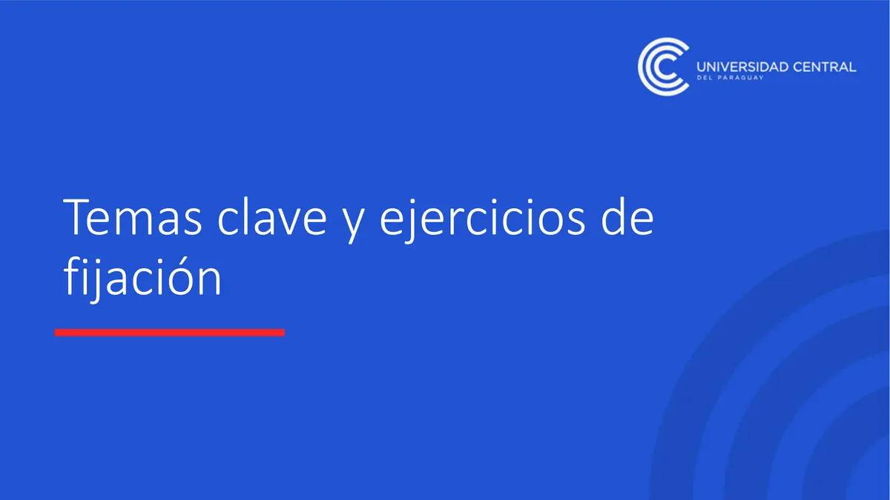
13 PÁGINAS · PDFEjercicios de fijaciónArchivo original de la cátedra, sin modificaciones.Abrir PDFDescargar
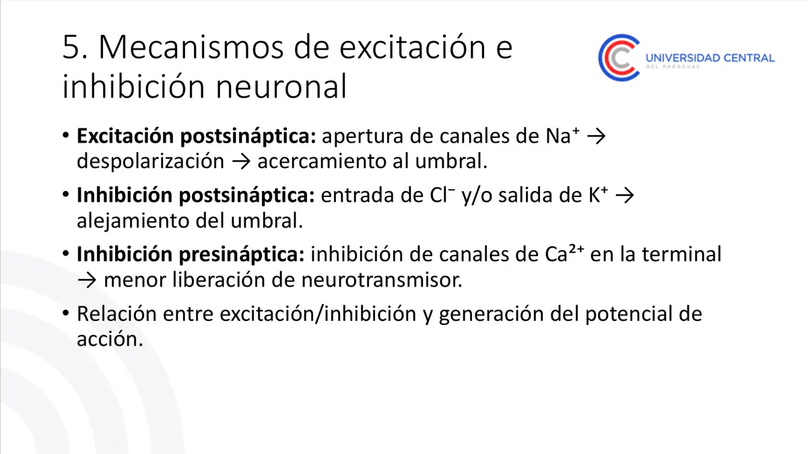
VISTA GUIADASinapsis y receptoresAbre las páginas como galería táctil.
RECURSOS IA
Contexto público limpio para estudiar
Transcripción reconstruida
La sesión se organiza alrededor de consignas: definir divisiones del sistema nervioso, explicar potencial y conducción, comparar sinapsis, asociar neurotransmisores y receptores, y aplicar la transducción a casos.
Perfil docente · Giselle Vert
La guía observable favorece respuestas causales y comparaciones cortas. Estado: tendencia de método, todavía acumulativa.
CONFIANZA MEDIA · TENDENCIAEstilo probable de preguntas
Relacionar canal iónico con fase del potencial.
Comparar sinapsis química y eléctrica.
Explicar un caso desde el mecanismo.
Prompt personalizado
Actúa como tutora de Fisiología II. Usa solo la clase del 20/08/2026. Hazme primero una pregunta causal, espera mi respuesta, corrige con mecanismo iónico y termina con una aplicación clínica breve. No mezcles respiración ni otras fechas.
Clase seleccionada · 17 de agosto: esta ficha y sus preguntas usan el PDF del profesor, la pizarra y la transcripción de esta sesión. No se mezclan con las clases respiratorias anteriores.
ARCHIVO DE LA CLASE
Revisar exactamente lo visto
El PDF original, la pizarra reconstruida y el simulador indicado por la profesora.
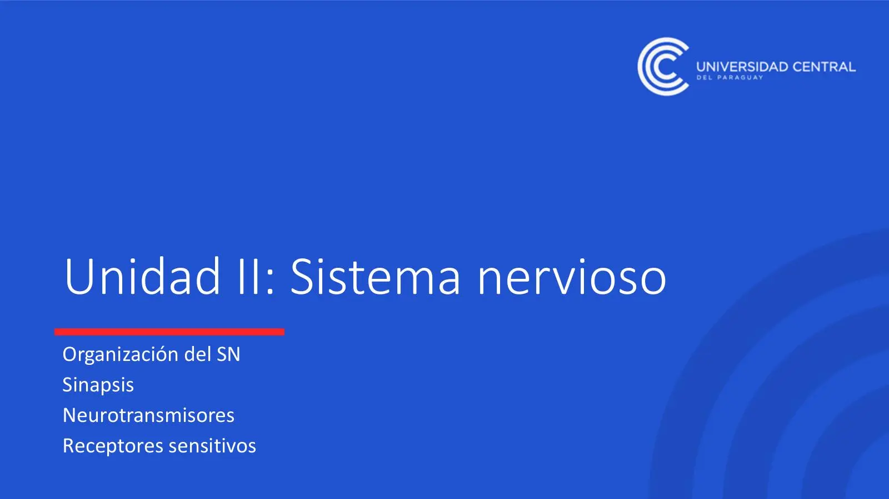
35 DIAPOSITIVASPDF del profesorOrganización, sinapsis, neurotransmisores y receptores sensitivos.
Un receptor capta un cambio, la información llega por una vía aferente, se integra en el sistema nervioso central y sale por una vía eferente para producir una respuesta.
01ReceptorDetecta el estímulo
02AferenciaLleva la información
03IntegraciónProcesa la señal
04EferenciaGenera la respuesta
NEURONALa forma acompaña la dirección de la señal.
ENTRADADendritasReciben señales de otras células.→INTEGRACIÓNSomaContiene el núcleo y reúne la información.→CONDUCCIÓNAxónTransporta el potencial de acción.→SALIDATerminal axónicaLibera neurotransmisores.
POTENCIAL DE ACCIÓN
Despolarizar y después repolarizar
En reposo, el interior neuronal es negativo. Un estímulo abre canales; la entrada de sodio favorece la despolarización. Después, la salida de potasio participa en la repolarización. La bomba sodio-potasio y los canales de fuga ayudan a conservar los gradientes.
Las fibras mielinizadas conducen más rápido. Un diámetro mayor también aumenta la velocidad. En la clasificación vista, las fibras A son mielinizadas y las C son amielínicas y más lentas.
SINAPSISUna neurona transmite la señal a otra célula.
01Llega el potencialDespolariza la terminal presináptica.02Entra Ca²⁺Se abren canales de calcio.03Sale el neurotransmisorLas vesículas liberan su contenido.04Se activa el receptorLa neurona postsináptica responde.
COMPARACIÓNSinapsis química y eléctricaToca para cerrar o abrir.+
Tipo
Cómo pasa la señal
Rasgo destacado
Química
Neurotransmisor en el espacio sináptico
Más común, unidireccional y modulable
Eléctrica
Uniones comunicantes entre células
Paso directo de corriente iónica
IONOTRÓPICOCanal que abre directamente
El neurotransmisor se une al receptor y el propio receptor deja pasar iones. La respuesta es rápida.
METABOTRÓPICOActiva proteínas intermediarias
El receptor activa proteína G y segundos mensajeros antes de modificar canales u otros procesos. Es más lento.
PIZARRA DEL 17 AGO.Excitación frente a inhibiciónLa dirección del movimiento iónico cambia el potencial de membrana.
EXCITACIÓN
Interior menos negativo
Apertura de canales de Na⁺ o Ca²⁺.
Cierre de canales de K⁺ o Cl⁻.
Aumento de receptores excitadores.
INHIBICIÓN
Interior más negativo
Apertura de canales de Cl⁻.
Apertura de canales de K⁺.
Aumento de receptores inhibidores.
NEUROTRANSMISORESLa respuesta depende del receptor activado.
AcetilcolinaLa acetilcolinesterasa termina su señal al degradarla.GABASe presentó como inhibidor; favorece la entrada de cloruro.GlutamatoSe presentó como neurotransmisor habitualmente excitador.Noradrenalina / adrenalinaEl efecto depende del subtipo de receptor.ATPTambién puede funcionar como neurotransmisor.NeuropéptidosAcción más lenta y prolongada que los transmisores pequeños.
RECEPTORES SENSITIVOSConvierten un estímulo en una señal nerviosa.
01MecanorreceptoresDeformación, presión o estiramiento.02TermorreceptoresCambios de temperatura.03NociceptoresEstímulos que pueden dañar el tejido.04QuimiorreceptoresCambios químicos.05FotorreceptoresLuz.
Transducción: el receptor transforma la energía del estímulo en un potencial receptor. Los receptores tónicos se adaptan lentamente; los fásicos responden sobre todo al cambio.
SUMACIÓN ESPACIALVarias entradas al mismo tiempoSe combinan señales de diferentes neuronas.SUMACIÓN TEMPORALUna entrada repetidaLos impulsos próximos en el tiempo se suman.DIVERGENCIAUna señal se amplificaUna neurona distribuye información a varias.CONVERGENCIAVarias señales se unenMúltiples entradas llegan a una neurona.CIRCUITO REVERBERANTELa actividad continúaLa señal retorna por el circuito y prolonga la respuesta.FATIGA SINÁPTICALa transmisión disminuyeAyuda a limitar una actividad nerviosa sostenida.
Clase seleccionada · 13 de agosto: aquí solo está la regulación nerviosa y química de la respiración. La clase de difusión del 10 de agosto se abre por separado arriba.
IDEA CENTRAL
La ventilación se regula por retroalimentación
El sistema detecta cambios químicos o mecánicos, los integra en el tronco encefálico y modifica la frecuencia y la profundidad respiratorias.
01SensoresQuimiorreceptores y receptores pulmonares
02ControladorBulbo y puente
03EfectoresDiafragma y músculos respiratorios
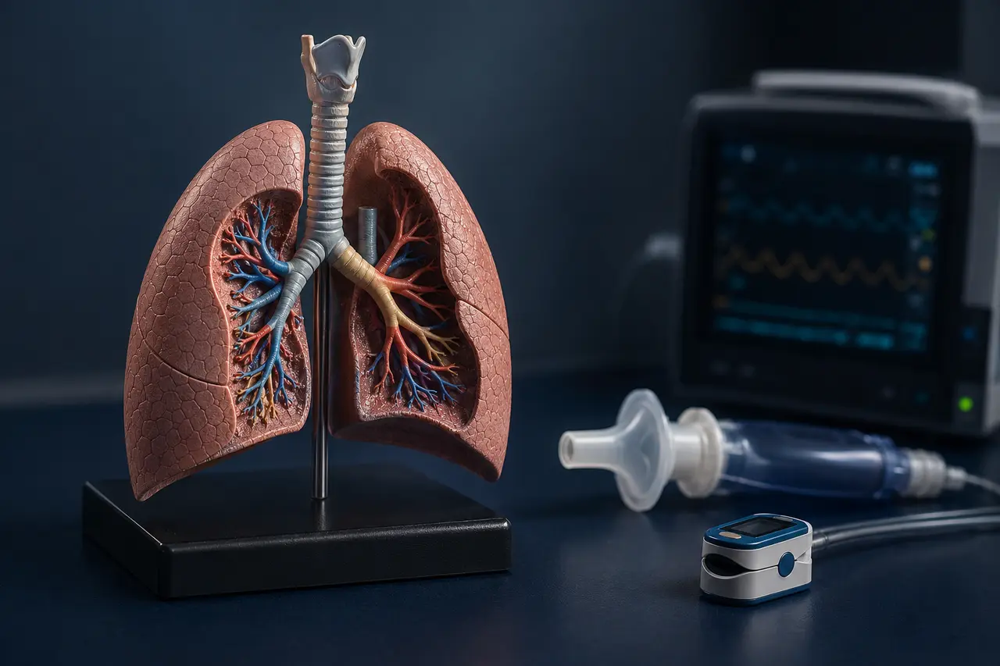
REPASO VISUALDel sensor a la ventilaciónRelaciona control nervioso, respuesta mecánica y medición respiratoria.
CENTROS RESPIRATORIOSNo reduzcas el ritmo a un solo “marcapasos”.
GRD · BULBOGrupo respiratorio dorsal
Predominio inspiratorio e integración de aferencias en el núcleo del tracto solitario; contribuye al patrón inspiratorio.
GRV · BULBOGrupo respiratorio ventral
Contiene neuronas inspiratorias y espiratorias; participa especialmente cuando aumenta la demanda. Incluye el complejo pre-Bötzinger, clave para generar ritmo.
GRP · PUENTEGrupo respiratorio pontino
Modula la transición entre inspiración y espiración. Los términos clásicos son centros neumotáxico y apnéustico.
TABLAVer tablaToca para abrir. Después, desliza a los lados.+
Sensor
Ubicación
Estímulo principal
Vía / respuesta
Quimiorreceptor central
Superficie ventrolateral del bulbo y región retrotrapezoidea
Cambio de pH del LCR generado sobre todo por PaCO₂
Aumenta la ventilación ante hipercapnia
Cuerpo carotídeo
Bifurcación carotídea
PaO₂ baja, además de PaCO₂ y pH
Nervio IX; respuesta rápida
Cuerpo aórtico
Arco aórtico
Cambios de gases y pH arterial
Nervio X hacia el tronco encefálico
Receptor de estiramiento
Músculo liso de vías aéreas
Distensión pulmonar marcada
Reflejo de Hering–Breuer por el vago
Receptores irritantes / J
Epitelio aéreo / región yuxtacapilar
Irritantes, edema o congestión intersticial
Tos, broncoconstricción o respiración rápida y superficial
VOLUNTARIOCorteza motoraPermite hablar, cantar o contener la respiración, pero el impulso químico termina imponiéndose.EMOCIONALSistema límbico e hipotálamoDolor, ansiedad y temperatura pueden modificar el patrón respiratorio.EJERCICIOComando central + propiocepciónLa ventilación aumenta de forma anticipatoria y mantiene PaO₂ y PaCO₂ cerca de sus valores normales.PROTECCIÓNReflejos pulmonaresAjustan o interrumpen la inspiración ante distensión, irritantes o líquido intersticial.
CASO DE CLASE · EPOC
Obstrucción + retención de CO₂
Una espiración prolongada, sibilancias y un FEV₁ reducido orientan a obstrucción. La hipercapnia puede producir acidosis respiratoria porque el CO₂ genera H₂CO₃ y luego H⁺ + HCO₃⁻ mediante anhidrasa carbónica.
Confirmar obstrucción con FEV₁/FVC por debajo del límite inferior de normalidad.
Leer PaO₂, PaCO₂, pH y HCO₃⁻ en conjunto.
Relacionar la clínica con ventilación alveolar y fatiga respiratoria.
Clase seleccionada · 10 de agosto: esta ficha se limita a difusión alveolocapilar, relación V/Q y transporte de O₂ y CO₂. La regulación respiratoria del 13 de agosto permanece en su propia clase.
IDEA CENTRAL
Intercambiar no es lo mismo que transportar
La ventilación lleva aire al alvéolo, la difusión cruza la barrera alveolocapilar, la perfusión aporta sangre y la hemoglobina transporta la mayor parte del O₂.
01VentilarAire hasta el alvéolo
02DifundirGas a través de la barrera
03TransportarSangre hacia los tejidos
CLASE DEL 10/08Del alvéolo al tejidoRelaciona membrana, gradientes, perfusión y hemoglobina.
DIFUSIÓN · LEY DE FICKMás área y gradiente favorecen el flujo; más grosor lo dificulta.
ÁREASuperficie disponibleLa pérdida de superficie, como en enfisema, reduce la capacidad de difusión.GRADIENTEDiferencia de presiones parcialesEl gas se desplaza desde mayor hacia menor presión parcial.GROSORDistancia de difusiónEdema o fibrosis aumentan el espesor y enlentecen el intercambio.GASSolubilidad / peso molecularEl CO₂ difunde con mayor facilidad que el O₂ por su mayor solubilidad.
TABLAVer tablaToca para abrir. Después, desliza a los lados.+
Proceso
Dato esencial
Error que evitar
Barrera alveolocapilar
Surfactante, epitelio alveolar, intersticio/membranas basales y endotelio
No confundir barrera fina con ausencia de estructura.
O₂ en sangre
Principalmente unido a hemoglobina; pequeña fracción disuelta
La PaO₂ refleja O₂ disuelto, no todo el contenido arterial.
CO₂ en sangre
Sobre todo bicarbonato; además carbamino y disuelto
No afirmar que viaja principalmente unido al hemo.
Relación V/Q
Debe acoplar ventilación alveolar y flujo sanguíneo
Una ventilación normal no compensa una perfusión ausente.
EFECTO BOHR↑CO₂, ↑H⁺, ↑temperatura o ↑2,3-BPG → menor afinidad Hb–O₂La curva se desplaza a la derecha y facilita la descarga de O₂ en tejidos activos.EFECTO HALDANELa desoxihemoglobina acepta mejor CO₂ y H⁺La oxigenación pulmonar facilita la eliminación de CO₂; no es el desplazamiento de cloruro.
INTEGRACIÓN CLÍNICA
Una alteración V/Q puede causar hipoxemia
Cuando una región recibe sangre pero poca ventilación, su V/Q disminuye. Cuando está ventilada pero casi no perfundida, se comporta como espacio muerto alveolar.
V/Q → 0: comportamiento tipo shunt.
V/Q → ∞: comportamiento tipo espacio muerto.
Difusión limitada: empeora con barrera gruesa o superficie reducida.
Clase del viernes 21 de agosto de 2026 reconstruida a partir de la transcripción y de tres pizarras.
Clase confirmada · 21 ago.
BIOQUÍMICA II · 21 AGO. 2026
Cetoacidosis diabética: del déficit hormonal al cerebro
Una secuencia causal única conecta hiperglucemia, pérdida de agua y electrolitos, lipólisis, cetogénesis, acidosis metabólica y riesgo neurológico durante la corrección.
PIZARRAS3 trazados fieles al original
TRABAJOActividades 3 y 4 impresas y manuscritas
ENTRENAMIENTO20 QCM · 10 V/F · 10 casos
CURSO COMPLETO
Cetoacidosis diabética: una cadena causal
La cetoacidosis diabética no se aprende como una lista de alteraciones aisladas. Se sigue desde el déficit de acción de la insulina hasta dos consecuencias que avanzan en paralelo: la pérdida de agua por hiperglucemia y la producción de ácidos por cetogénesis. Al final, ambas rutas convergen en la vigilancia de electrolitos, osmolaridad y estado neurológico.
01 · DISPARADOR HORMONAL
La acción insuficiente de insulina cambia el uso de los combustibles
El proceso comienza cuando la acción efectiva de la insulina resulta insuficiente y predominan las hormonas contrarreguladoras. La glucosa entra menos en los tejidos sensibles a la insulina, mientras el hígado aumenta la gluconeogénesis y la glucogenólisis.
Al mismo tiempo, se activan lipólisis y proteólisis. Por eso la cetoacidosis no es solo una hiperglucemia: desde el inicio existe una segunda ruta metabólica que libera ácidos grasos y prepara la formación de cuerpos cetónicos.
02 · HIPERGLUCEMIA Y PÉRDIDA DE AGUA
La glucosa filtrada produce una diuresis osmótica
La producción hepática de glucosa y la menor captación periférica elevan la glucemia. Cuando la carga filtrada supera la capacidad de reabsorción tubular, aparece glucosuria; la glucosa que permanece en la orina arrastra agua y electrolitos.
La consecuencia es una pérdida progresiva de volumen, sodio y potasio. A medida que disminuye la perfusión renal, también se dificulta la eliminación de glucosa y cetonas, de modo que la deshidratación contribuye a mantener el trastorno.
03 · LIPÓLISIS Y CETOGÉNESIS
Los ácidos grasos llegan al hígado y se convierten en cuerpos cetónicos
La lipólisis libera ácidos grasos que el hígado utiliza para formar acetil-CoA. En este contexto, el exceso de acetil-CoA se dirige hacia la cetogénesis y origina principalmente acetoacetato y β-hidroxibutirato; la acetona constituye la fracción volátil.
Acetoacetato y β-hidroxibutirato son ácidos. Su acumulación consume bicarbonato y aumenta la brecha aniónica. Así se conecta la alteración metabólica inicial con la acidosis que da nombre al cuadro.
04 · RESPUESTA COMPENSATORIA
La respiración de Kussmaul intenta reducir el componente respiratorio
Ante la caída del bicarbonato y del pH, el sistema respiratorio aumenta la ventilación. La respiración profunda y rápida de Kussmaul reduce la PaCO₂ y limita parcialmente la acidemia.
Esta hiperventilación es una compensación, no la causa del trastorno. El origen sigue siendo metabólico y está en la acumulación de cuerpos cetónicos; reconocer esta dirección evita invertir la cadena fisiopatológica.
05 · BALANCE DE POTASIO
La concentración sérica no representa las reservas corporales
La diuresis osmótica provoca pérdidas urinarias de potasio, por lo que el organismo puede presentar un déficit corporal total importante. Sin embargo, antes de la corrección, el K⁺ sérico puede encontrarse normal o elevado porque la falta de insulina y la acidosis favorecen su desplazamiento fuera de la célula.
Cuando actúa la insulina y mejora la acidosis, el potasio vuelve al espacio intracelular. Por eso la cifra sérica debe interpretarse dentro de la secuencia completa y vigilarse junto con la evolución metabólica.
06 · OSMOLARIDAD Y CEREBRO
El cerebro se adapta a la hiperosmolaridad y necesita cambios controlados
La hiperglucemia y la pérdida de agua elevan la osmolalidad efectiva. Para conservar su volumen, las células cerebrales generan osmoles idiogénicos y se adaptan al medio hiperosmolar.
Si el gradiente osmótico cambia con demasiada rapidez, el agua puede entrar en el tejido cerebral. De ahí que la evolución neurológica, la osmolaridad y los electrolitos deban interpretarse de forma conjunta durante la corrección.
Seguridad: este curso explica mecanismos y vigilancia; no reemplaza el protocolo clínico institucional ni prescribe velocidades de corrección. Cada pizarra aparece en miniatura junto al mecanismo correspondiente y se puede ampliar sin recorte.
FICHA RÁPIDA · 5 MIN
La CAD en seis relaciones
INSULINA ↓Glucosa y lipólisis ↑Dos rutas paralelas generan deshidratación y cetosis.RIÑÓNGlucosuria → agua ↓Diuresis osmótica y déficit electrolítico.HÍGADOβ-oxidación → cetonasAcetoacetato y β-hidroxibutirato consumen HCO₃⁻.PULMÓNKussmaul → CO₂ ↓Compensación respiratoria de la acidosis.K⁺Déficit total ocultoEl valor sérico inicial no refleja las reservas.CEREBROOsmoles adaptativosLa evolución neurológica debe vigilarse.
FICHA ULTRA RÁPIDA · 90 S
Secuencia obligatoria
Insulina baja + contrarregulación alta.
Hiperglucemia → glucosuria → diuresis osmótica.
Lipólisis → β-oxidación → cuerpos cetónicos.
HCO₃⁻ baja; Kussmaul compensa.
K⁺ sérico no equivale al potasio corporal total.
Fluidos, insulina, K⁺ y neurología se monitorizan juntos.
ENTRENAMIENTO
40 preguntas sobre la cadena fisiopatológica
MATERIAL DE LA CLASE
Pizarras limpias y actividades 3–4
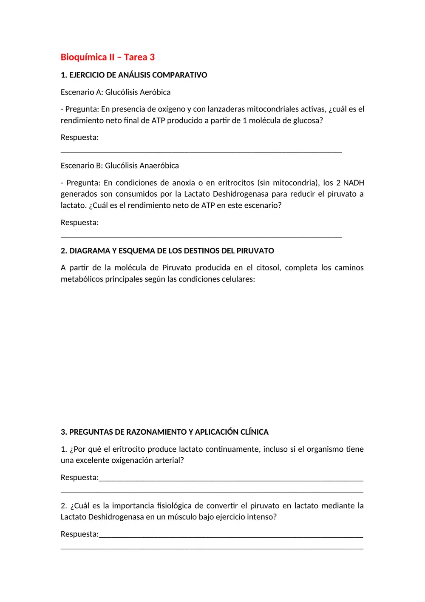
4 PÁGINAS · DOCXActividades 3 y 4Imprimir y completar a mano. El práctico contiene cinco actividades y la presencia es obligatoria.Descargar DOCX
RECURSOS IA
Transcripción pública y método de estudio
Transcripción reconstruida
La explicación parte del déficit de insulina, sigue la producción hepática de glucosa y la lipólisis, después relaciona la cetogénesis con la acidosis. La pizarra final introduce los osmoles cerebrales y el riesgo durante la corrección.
Perfil docente · Andrea López
La tendencia observable prioriza cadenas causales, balances y conexiones clínicas. Los trabajos requieren una respuesta desarrollada a mano.
CONFIANZA MEDIA · TENDENCIAEstilo probable de preguntas
Ordenar una cadena metabólica.
Distinguir concentración sérica y déficit corporal.
Explicar la compensación de un trastorno ácido-base.
Prompt personalizado
Enséñame la CAD con una cadena causal. Usa solo la clase del 21/08/2026. Presenta un caso de dos frases, pregúntame cuál es el siguiente mecanismo y corrige sin dar protocolos terapéuticos inventados.
BIOQUÍMICA II · 19 AGO. 2026
Glucólisis regulada y destino oxidativo del piruvato
La vía citosólica entrega piruvato; el complejo PDH lo convierte en acetil-CoA dentro de la mitocondria y enlaza con el ciclo de Krebs.
APOYOMini esquema metabólico contextual
EJERegulación + cofactores
ENTRENAMIENTO20 QCM · 10 V/F · 10 casos
CURSO COMPLETO
De la glucosa al acetil-CoA
El hilo de la clase comienza en el citosol, donde la glucosa se convierte en piruvato, y termina en la matriz mitocondrial, donde el complejo PDH forma acetil-CoA. Para comprenderlo, hay que seguir el balance de la vía, sus puntos de control y la decisión metabólica que se toma con el piruvato.
01 · BALANCE DE LA GLUCÓLISIS
Una glucosa produce dos piruvatos, dos ATP netos y dos NADH
La glucólisis ocurre en el citosol y transforma una molécula de seis carbonos en dos moléculas de piruvato de tres carbonos. En la fase de inversión se consumen dos ATP; en la fase de obtención se producen cuatro, por lo que la ganancia neta es de dos ATP.
La vía también reduce dos NAD⁺ a dos NADH. Para que la glucólisis continúe, ese NADH debe volver a oxidarse. El modo de hacerlo depende del tejido y de la posibilidad de conectar el metabolismo citosólico con la oxidación mitocondrial.
02 · PUNTOS DE REGULACIÓN
Tres reacciones irreversibles orientan el flujo
Hexoquinasa o glucoquinasa controlan la entrada de la glucosa en la vía. La fosfofructoquinasa 1 constituye el paso limitante y responde al estado energético: AMP y fructosa 2,6-bisfosfato favorecen su actividad, mientras ATP, citrato y pH bajo reducen el flujo.
La piruvato quinasa regula el último paso productor de ATP. En conjunto, estas tres enzimas impiden que la glucólisis funcione como una secuencia automática: la velocidad se ajusta a la disponibilidad de sustrato y a las necesidades energéticas de la célula.
03 · DESTINOS DEL PIRUVATO
El producto final de la glucólisis es un punto de decisión
El piruvato puede convertirse en lactato, alanina, oxalacetato o acetil-CoA. El destino depende del tejido, del estado redox y de la capacidad mitocondrial disponible en ese momento.
En el eritrocito, que no dispone de mitocondrias, la conversión de piruvato en lactato regenera NAD⁺ y permite mantener la glucólisis. Cuando existe conexión mitocondrial, el piruvato puede entrar en la matriz y alimentar su transformación oxidativa.
04 · COMPLEJO PIRUVATO DESHIDROGENASA
PDH enlaza la glucólisis con el metabolismo del acetil-CoA
En la matriz mitocondrial, el complejo PDH realiza una descarboxilación oxidativa irreversible. El piruvato pierde un carbono como CO₂, el resto se une a la coenzima A para formar acetil-CoA y, al mismo tiempo, NAD⁺ se reduce a NADH.
La reacción requiere tres componentes enzimáticos —E1, E2 y E3— y cinco cofactores: TPP, lipoato, CoA, FAD y NAD⁺. La organización del complejo permite transferir los intermediarios de una etapa a la siguiente sin liberarlos al medio.
05 · CONTROL DEL COMPLEJO
La fosforilación apaga PDH cuando la energía ya es abundante
La PDH quinasa fosforila e inhibe el complejo, mientras que la PDH fosfatasa retira ese fosfato y lo reactiva. De esta forma, la entrada de carbono al acetil-CoA se adapta al estado metabólico.
ATP, NADH y acetil-CoA funcionan como señales de abundancia energética y favorecen la inhibición. Cuando la célula necesita oxidar más piruvato, el equilibrio regulador se desplaza hacia la forma activa.
06 · CONEXIÓN CLÍNICA
La tiamina es necesaria para que E1 procese el piruvato
La TPP deriva de la vitamina B1 y participa en el componente E1. Si falta tiamina, disminuye la capacidad de realizar la descarboxilación oxidativa del piruvato.
El piruvato que no entra eficazmente por PDH queda más disponible para convertirse en lactato. Así, una deficiencia vitamínica puede alterar el punto exacto que conecta la glucólisis con la producción mitocondrial de acetil-CoA.
Corrección integrada: el O₂ no es sustrato directo de la glucólisis; condiciona la reoxidación del NADH y el destino del piruvato. No se publica ninguna imagen como «pizarra del profesor» sin una fotografía original verificable.
FICHA RÁPIDA · 5 MIN
Seis anclas metabólicas
LUGARCitosolLa glucólisis no usa O₂ directamente.BALANCE2 ATP + 2 NADHPor una glucosa y dos piruvatos.CONTROLPFK-1Paso limitante y sensible al estado energético.ERITROCITOPiruvato → lactatoLDH regenera NAD⁺.PDH3C → 2C + CO₂Forma acetil-CoA y NADH.COFACTORESB1, lipoato, B5, B2, B3TPP · lipoato · CoA · FAD · NAD⁺.
FICHA ULTRA RÁPIDA · 90 S
No confundas
Glucólisis: citosol; PDH: matriz mitocondrial.
PFK-1 controla el flujo; F2,6BP la activa.
Lactato regenera NAD⁺ cuando no se oxida el NADH.
PDH es irreversible y produce CO₂ + NADH.
TPP proviene de B1; CoA proviene de B5.
ENTRENAMIENTO
40 preguntas de regulación y PDH
MATERIAL DE LA CLASE
Fuente visual pendiente
Identidad del profesor protegida: los antiguos gráficos editoriales ya no se presentan como pizarras. La reconstrucción fiel se añadirá únicamente desde la fotografía original de esta fecha.
RECURSOS IA
Contexto de estudio limpio
Transcripción reconstruida
El hilo pasa de la regulación de la glucólisis a los destinos del piruvato y termina con el complejo PDH, sus enzimas y cinco cofactores.
Perfil docente · Andrea López
Privilegia conexiones entre rutas, balance energético y consecuencias clínicas. Estado: tendencia acumulativa.
CONFIANZA MEDIA · TENDENCIAEstilo probable de preguntas
Completar una ruta con enzima y producto.
Explicar por qué cambia el flujo.
Vincular vitamina, cofactor y reacción.
Prompt personalizado
Repasa conmigo la clase de Bioquímica II del 19/08/2026. Alterna una pregunta de regulación con otra sobre PDH. Exige que justifique cada respuesta por estado energético o cofactor y no mezcles la CAD del 21/08.
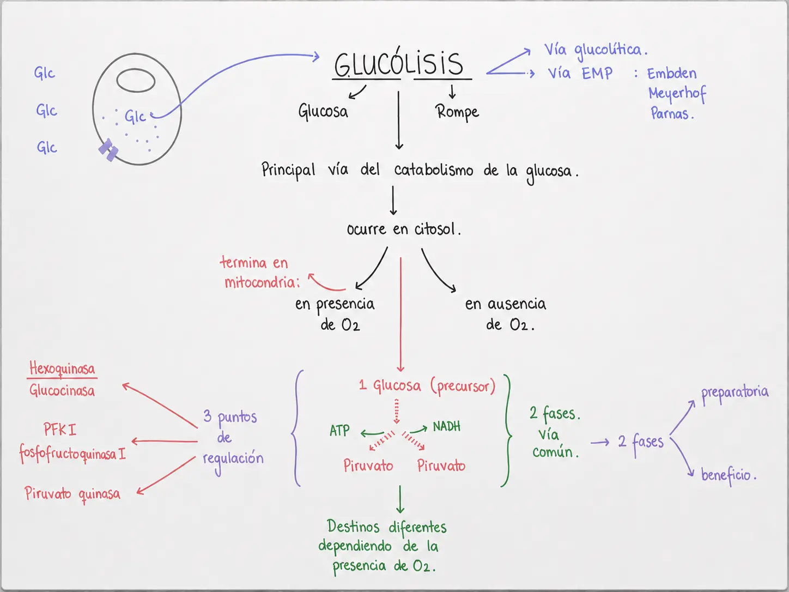
ARCHIVO DE LA PIZARRA · 7 LÁMINAS
La pizarra del profesor, reconstruida en limpio
La misma composición, escritura, flechas, colores y anotaciones del profesor, limpiada sin reinterpretar el tablero.
También se denomina vía glicolítica o vía de Embden–Meyerhof–Parnas (EMP). Ocurre en el citosol y puede continuar aunque no haya suficiente oxígeno. El O₂ no es un sustrato directo: modifica el destino posterior del piruvato y del NADH.
BALANCE NETO POR GLUCOSA2 piruvatos + 2 ATP + 2 NADHTambién se forman 2 H₂O y 2 H⁺. Se consumen 2 ATP y después se producen 4 ATP.
PRIMERO, MIRA LA RUTA
Una glucosa se convierte en dos piruvatos
El dibujo muestra el número de carbonos y la energía. Debajo queda la explicación corta de cada cambio.
INICIO1 glucosa6 carbonos
−2 ATP→Hexo/glucoquinasa · PFK-1
PASO 3F1,6BPGlucosa activada
Aldolasa→Divide 6 C en 3 C + 3 C
PASO 52 G3PDesde aquí, todo ×2
+4 ATP · +2 NADH→Reacciones 6–10
FINAL2 piruvatosBalance neto: +2 ATP + 2 NADH
1 · Preparar. La célula gasta 2 ATP para añadir fosfatos y volver la glucosa más reactiva.
2 · Dividir. La aldolasa separa los 6 carbonos; al final quedan dos G3P de 3 carbonos.
3 · Recuperar. Cada G3P recorre los mismos cinco pasos: por eso la ganancia se cuenta dos veces.
Esquema de carbonos simplificado: ayuda a seguir la ruta, no representa la estructura química completa.
PIZARRA RECONSTRUIDA · CLASE DEL 14/08
La glucólisis en una sola mirada
Las fotos de clase se reorganizan aquí como un recorrido continuo: dónde ocurre, qué se invierte, qué se gana y dónde se regula.
3 PUERTASHexo/glucoquinasa · PFK-1 · piruvato quinasaSon los pasos irreversibles y los principales puntos de regulación.OXÍGENOLa vía no consume O₂ directamenteEl O₂ determina el destino posterior del piruvato y la reoxidación del NADH.NADH CITOSÓLICONecesita una lanzadera para entrar en la cadena respiratoriaMalato–aspartato: ≈2,5 ATP/NADH; glicerol-3-fosfato: ≈1,5 ATP/NADH.
REACCIONES 1–5Fase preparatoria
La célula invierte energía, fosforila la glucosa y la divide en dos triosas.
−2 ATP invertidos
1 glucosa de 6 C → 2 G3P de 3 C
Incluye hexoquinasa/glucoquinasa y PFK-1
REACCIONES 6–10Fase de beneficio
Cada G3P se oxida y genera energía; por eso todos los resultados de esta fase se multiplican por dos.
+4 ATP producidos
+2 NADH producidos
+2 piruvatos como productos finales
LAS 10 REACCIONESComprende la lógica; no memorices sonidos deformados por la transcripción.
01
Glucosa → glucosa-6-fosfatoHexoquinasa o glucoquinasa · consume ATP · irreversible
F6P → fructosa-1,6-bisfosfatoPFK-1 · consume ATP · irreversible y principal punto de control
04
F1,6BP → G3P + DHAPAldolasa · ruptura de la hexosa en dos triosas
05
DHAP → G3PTriosa fosfato isomerasa · quedan 2 G3P
06
G3P → 1,3-bisfosfogliceratoGliceraldehído-3-fosfato deshidrogenasa · forma NADH y añade fosfato inorgánico
07
1,3-BPG → 3-fosfogliceratoFosfoglicerato quinasa · forma ATP por fosforilación a nivel de sustrato
08
3-PG → 2-fosfogliceratoFosfoglicerato mutasa · cambia la posición del fosfato
09
2-PG → fosfoenolpiruvatoEnolasa · libera H₂O y forma PEP de alta energía
10
PEP → piruvatoPiruvato quinasa · forma ATP a nivel de sustrato · irreversible
PUNTO 1
Hexoquinasa / glucoquinasa
Hexoquinasa: mayoría de tejidos, alta afinidad e inhibición por G6P. Glucoquinasa: hígado y célula β, alta capacidad y sin inhibición por G6P; GKRP puede secuestrarla en el núcleo hepático.
PUNTO 2 · PREPARAR
PFK-1
Paso limitante. Se activa por AMP/ADP y fructosa-2,6-bisfosfato; se inhibe por ATP, citrato y pH bajo. Insulina y glucagón actúan de forma indirecta en hígado al modificar la F2,6BP.
PUNTO 3 · PREPARAR
Piruvato quinasa
Se activa por fructosa-1,6-bisfosfato y se inhibe por ATP y alanina. En hígado, glucagón favorece su fosforilación e inhibición; insulina favorece la desfosforilación.
RESUMEN COMPLETO · CLASE DEL 14/08
La lógica de la glucólisis en cinco bloques
15 min
Epidemiología y Salud Pública · clase del 19 de agosto
Organización de urgencias y emergencias
Clase del miércoles 19 de agosto de 2026 basada en las 57 diapositivas entregadas por la cátedra.
Clase confirmada · 19 ago.
EPIDEMIOLOGÍA · 19 AGO. 2026
Un sistema que prioriza, regula y traslada
La atención urgente no es una sala aislada: integra ciudadanía, primer nivel, centro coordinador, transporte, hospital y retorno a la red.
SOPORTEPowerPoint original · 57 diapositivas
TAREAExposición grupal · máximo 10
ENTRENAMIENTO20 QCM · 10 V/F · 10 casos
CURSO COMPLETO
De la demanda al nivel correcto de atención
Un sistema de urgencias no empieza en la puerta del hospital. La clase sigue el recorrido de una demanda desde el primer contacto: reconocer la gravedad, regular la respuesta, movilizar el recurso adecuado, priorizar al llegar y devolver al paciente a una red capaz de continuar la atención.
01 · COMPRENDER LA DEMANDA
Urgencia y emergencia no expresan el mismo nivel de riesgo
La urgencia describe una necesidad de atención pronta. Puede existir un riesgo objetivo de deterioro o una percepción subjetiva del usuario que necesita evaluación, aunque todavía no se haya identificado una amenaza inmediata.
La emergencia implica peligro inmediato para la vida, un órgano o una función y exige actuación sin demora. Esta distinción inicial orienta la prioridad, pero no sustituye la valoración clínica ni autoriza a ignorar una demanda percibida como urgente.
02 · ORGANIZACIÓN DEL SIUE
La respuesta depende de componentes que trabajan como una red
El Sistema Integral de Urgencias y Emergencias conecta el acceso ciudadano, el centro coordinador, la atención prehospitalaria, el transporte y la respuesta hospitalaria. Cada componente recibe información y la entrega al siguiente.
Si una parte actúa sin coordinación, se pierde continuidad: puede movilizarse un recurso inadecuado, elegirse un destino sin capacidad o repetirse la evaluación. El sistema busca que el paciente llegue al lugar correcto con el soporte que necesita.
03 · CENTRO COORDINADOR
Regular significa escuchar, clasificar, orientar y movilizar
El centro coordinador recibe la demanda y reúne los datos necesarios para estimar el riesgo. Puede ofrecer orientación, decidir qué recurso movilizar y mantener comunicación con el equipo que realizará la asistencia.
La regulación continúa hasta el destino. Coordinar previamente con el servicio receptor evita un traslado aislado y permite relacionar gravedad, distancia, capacidad disponible y nivel de soporte.
04 · ASISTENCIA Y TRANSPORTE
El traslado forma parte del cuidado y no es un simple desplazamiento
El soporte vital básico y el soporte vital avanzado responden a necesidades diferentes. El personal, el equipamiento y la capacidad de intervenir durante el trayecto deben corresponder al riesgo clínico identificado.
Elegir el vehículo sin elegir el destino no completa la respuesta. La seguridad depende de que la asistencia iniciada antes del traslado continúe durante el recorrido y sea recibida por un servicio preparado.
05 · TRIAGE DE CINCO NIVELES
El triage prioriza el tiempo de atención; no establece el diagnóstico final
La primera observación, el motivo de consulta, los signos vitales y el riesgo de deterioro permiten asignar un nivel de prioridad. Los niveles más altos requieren intervención inmediata o muy rápida; los inferiores toleran una espera mayor bajo vigilancia.
La clasificación no es definitiva. Un paciente que espera debe ser reevaluado si cambia su estado, porque la prioridad depende de la situación clínica actual y no solamente del orden de llegada.
06 · ORGANIZACIÓN HOSPITALARIA
Recepción, reanimación, consulta y observación necesitan circuitos claros
Después del triage, el paciente debe entrar en un circuito acorde con su prioridad: área de reanimación, consulta, procedimientos, observación o salida. La circulación de pacientes, información y recursos debe conservar la continuidad asistencial.
Cuando la demanda supera la capacidad, aumentan los tiempos y el riesgo. La saturación no es solo un problema de espacio; también afecta la disponibilidad de personal, equipos, camas y destinos posteriores.
07 · MÚLTIPLES VÍCTIMAS
Cuando los recursos no alcanzan, la prioridad busca el mayor beneficio posible
En una situación con múltiples víctimas, no todos pueden recibir simultáneamente la atención habitual. Métodos rápidos como SHORT o START permiten identificar prioridad, medidas iniciales y orden de evacuación.
La lógica cambia porque el recurso es limitado. La clasificación debe ser simple, repetible y dinámica: una víctima puede cambiar de categoría según su respuesta y la evolución del escenario.
08 · CONTINUIDAD EN LA RED
La atención termina bien cuando existe referencia y contrarreferencia
La atención primaria aporta proximidad, seguimiento y conocimiento del territorio. El hospital concentra recursos de mayor complejidad, pero puede saturarse si recibe problemas que podrían resolverse o continuar en otros niveles.
La red necesita comunicación en ambos sentidos. Referir permite acceder al recurso necesario; contrarreferir devuelve la información y el seguimiento al nivel que continuará el cuidado.
TRABAJO PRÁCTICO · SEMANA SIGUIENTE
Exposición sobre una enfermedad asignada por sorteo
Máx. 10 por grupo
Cada tarjeta muestra el tema sorteado, la responsable y los integrantes confirmados. El trabajo debe ser original, puntual, con diapositivas y uniforme; la evaluación es individual. Sugerencias: Murray y protocolos vigentes de Paraguay.
Cargando la composición confirmada, las responsables y los temas…
Base exacta: «Organización Urg y Emergencias», 57 diapositivas, más la consigna docente de trabajo práctico.
FICHA RÁPIDA · 5 MIN
Ocho piezas del sistema
URGENCIAAtención prontaRiesgo real o necesidad percibida.EMERGENCIAAtención inmediataAmenaza vital, orgánica o funcional.CCURegula la demandaClasifica, orienta y moviliza recursos.TRANSPORTESVB o SVAEl soporte se ajusta al riesgo.TRIAGEPrioridad, no diagnósticoCinco niveles y reevaluación.HOSPITALCircuitos diferenciadosReanimación, consulta y observación.
FICHA ULTRA RÁPIDA · 90 S
Las reglas de decisión
Emergencia amenaza vida u órgano y no espera.
El CCU coordina el recurso y el destino.
El traslado es asistencia, no simple transporte.
El triage ordena por riesgo y debe reevaluar.
Cinco niveles separan reanimación de atención no urgente.
En catástrofe se prioriza el beneficio colectivo posible.
ENTRENAMIENTO
40 preguntas sobre el sistema de urgencias
MATERIAL DE LA CLASE
57 diapositivas y consigna de exposición
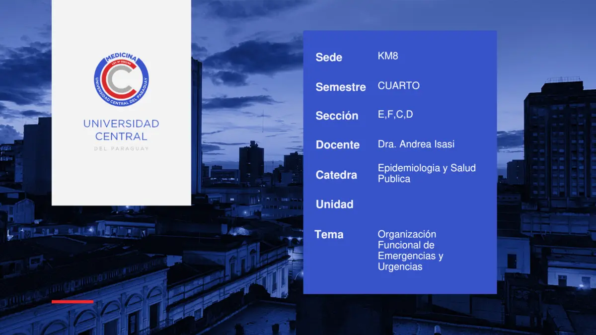
57 DIAPOSITIVAS · PPTXOrganización Urg y EmergenciasArchivo original de la cátedra con vista táctil.Descargar PPTX
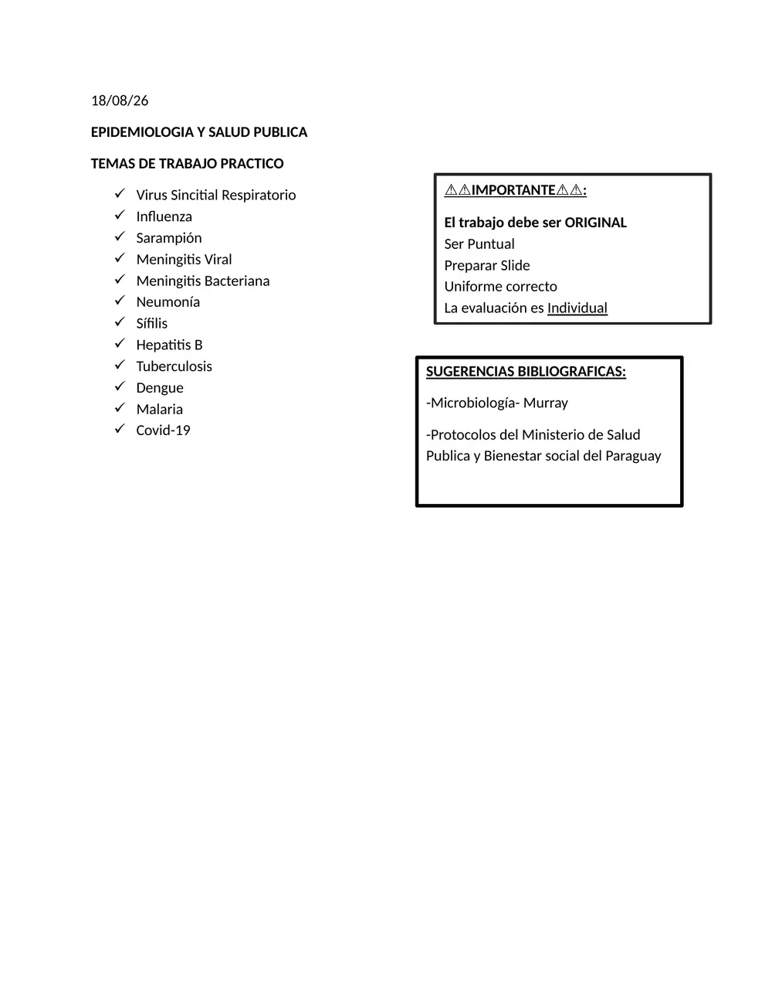
1 PÁGINA · DOCXTrabajo prácticoTemas, criterios de la presentación y bibliografía sugerida.Descargar DOCX
RECURSOS IA
Estudiar con la organización de la cátedra
Transcripción reconstruida
La sesión avanza desde definiciones de demanda urgente hasta componentes del SIUE, regulación, transporte, organización hospitalaria, triage de cinco niveles y situaciones con múltiples víctimas.
Perfil docente · Andrea Isasi
La tendencia observable favorece definiciones operativas, comparaciones, secuencias del sistema y listas de criterios. La exposición agrega evaluación individual.
CONFIANZA ALTA · OBSERVACIÓN REPETIDAEstilo probable de preguntas
Diferenciar urgencia y emergencia.
Ordenar componentes y funciones.
Asignar prioridad sin convertir el triage en diagnóstico.
Prompt personalizado
Evalúame sobre la clase de Epidemiología del 19/08/2026. Alterna definiciones, secuencias del SIUE y mini-casos de triage. Después de cada respuesta, distingue prioridad, recurso y destino.
ARCHIVO DEL PROFESOR · 3 DOCUMENTOS
Materiales de Epidemiología
Los archivos originales quedan completos. La vista del sitio abre primero las páginas más útiles para este curso.
36 DIAPOSITIVAS · POWERPOINT
Atención Primaria de la Salud
APS, atención integral, familia, sectorización y vigilancia comunitaria.
Cómo se separaron las clases: en las grabaciones antiguas que contienen varias clases, la última parte es la más reciente. Cada fecha mencionada marca el inicio de otra clase.
ENFOQUE DECLARADO PARA LA EVALUACIÓN
Lo que la profesora señaló que puede preguntar
Prioriza definiciones cortas, diferencias y listas esenciales. No hace falta reproducir párrafos completos.
1978: Declaración de Alma-Ata.
2008: implementación de la estrategia APS en Paraguay.
Definición, servicios y principios de la APS.
Significado concreto frente a abstracto.
Integralidad y sus cuatro dimensiones.
Etapas del ciclo familiar.
Objetivo de la sectorización.
Urgencia frente a emergencia.
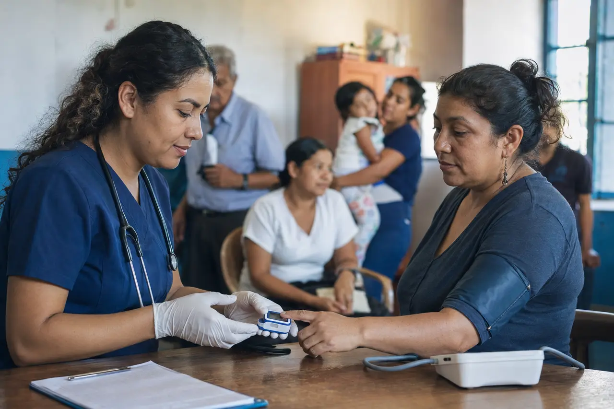
REPASO VISUALPrimer contacto y prioridad clínicaObservar, medir, clasificar el riesgo y orientar dentro de la red asistencial.
01APSPrimer contacto, accesibilidad, continuidad y participación comunitaria.02USFEquipo de Salud de la Familia y dispensarización en cuatro grupos.03IntegralidadPersona, familia, comunidad y ambiente durante todo el curso de vida.04SectorizaciónTerritorio, responsables, mapa, riesgo y distribución equitativa de recursos.05TriagePrioriza por gravedad clínica; no por orden de llegada.06Red asistencialAtender, estabilizar, referir y realizar seguimiento o contrarreferencia.
01
Atención Primaria de la SaludConcepto, historia, equipo y principios
DEFINICIÓN OPERATIVA
La APS es la asistencia sanitaria esencial, basada en métodos y tecnologías prácticas, científicamente fundadas y socialmente aceptables, accesible a individuos y familias con participación comunitaria y a un costo sostenible. Es el primer nivel de contacto con el Sistema Nacional de Salud.
Alma-AtaLa APS se reconoce como estrategia clave para «salud para todos».ParaguayComienza la implementación nacional de la estrategia APS y de las USF.AstanaSe renueva el compromiso internacional con la atención primaria.
Equipo de Salud de la Familia en Paraguay: médico, licenciado en enfermería u obstetricia, auxiliar en enfermería y agentes comunitarios de salud. La clase mencionó además odontología y técnicos como integrantes deseables según disponibilidad.
Servicios básicos citados
Educación y promoción de la salud.
Agua segura, saneamiento y nutrición.
Atención materno-infantil y planificación familiar.
Inmunización y salud mental.
Prevención y control de enfermedades.
Atención de problemas y traumatismos comunes.
Principios que debes nombrar
Equidad y cobertura universal.
Participación de la comunidad.
Trabajo multidisciplinario.
Acción multisectorial.
Tecnología apropiada y fundamento científico.
Atención próxima al lugar donde la persona vive y trabaja.
CONCRETO
Operativo
Depende de cómo el sistema organiza la APS y su relación con los demás niveles de atención.
ABSTRACTO
Ideológico
Expresa el derecho a la salud, el desarrollo humano, la justicia y la equidad social.
GRUPO IAparentemente sanoGRUPO IICon factores de riesgoGRUPO IIIEnfermoGRUPO IVCon discapacidad
02
Modelo de Atención IntegralDimensiones, curso de vida y familia
La atención integral ofrece promoción, prevención, recuperación y rehabilitación de forma continua, con enfoque biopsicosocial, personal competente, trabajo coordinado y participación social.
PERSONAEtapa de vida→FAMILIADinámica y hogar→COMUNIDADActores y redes→AMBIENTEEntorno saludable
01FormaciónPareja reciente, todavía sin hijos.02ExpansiónNacen hijos y atraviesan etapas de crecimiento.03DispersiónAl menos un hijo puede independizarse y formar su familia.04ContracciónLos hijos parten y la pareja vuelve a quedar sola o afronta pérdidas.
Edades utilizadas en el material: niño desde la fecundación hasta 9 años; adolescente 10–19; adulto 20–64; adulto mayor desde 65. Son rangos programáticos del curso y no sustituyen definiciones legales o pediátricas locales.
03
Sectorización y vigilancia comunitariaTerritorio, riesgo y uso racional de recursos
IDEA CENTRAL
La sectorización divide territorialmente la jurisdicción de un establecimiento en sectores y asigna responsables o sectoristas. Su objetivo es identificar y vigilar familias o comunidades con riesgo sanitario y distribuir recursos con equidad.
1DelimitarÁrea geográfica y población.2MapearViviendas, familias y actores.3ClasificarRiesgo sanitario y situación social.4AsignarResponsables y recursos.5VigilarSeguimiento, referencia y evaluación.
Familia de riesgo
Presenta menor capacidad de controlar su salud por hábitos, prácticas o condiciones familiares, sociales y ambientales que favorecen estilos de vida inadecuados.
Evaluación socioeconómica del curso
A: no pobre · B: pobre no extremo · C: pobre extremo. La clasificación ayuda a priorizar apoyo, no a negar atención.
04
Triage, urgencia y emergenciaObservación inicial, signos vitales y prioridad
URGENCIA
Atención pronta
Problema imprevisto que genera necesidad inminente de atención. Puede ser objetiva, con riesgo real de deterioro, o subjetiva, percibida como urgente sin riesgo inmediato identificado.
EMERGENCIA
Atención inmediata
Existe amenaza vital o de órgano y no puede esperar. Se interrumpe una actividad menos prioritaria para iniciar estabilización y tratamiento.
PRIMEROObservarColor, facies, conciencia, trabajo respiratorio y aspecto general.
DESPUÉSPreguntarMotivo, inicio, evolución, episodios y antecedentes.
MEDIRSignos vitalesTemperatura, PA, FC, FR y SpO₂ cuando haya pulsioxímetro.
PRIORIZARClasificarSegún riesgo y posibilidad de deterioro, no por llegada.
PREPARACIÓN PARA LA PRÓXIMA CLASE
Colores y tiempos del RAC
Datos del Manual RAC del MSPBS de Paraguay, página impresa 15. Son tiempos máximos deseados para la atención.
Microbiología II · Teórica · clase del 17 de agosto
Micosis por profundidad y casos clínicos
Clase del lunes 17 de agosto de 2026: micosis superficiales, cutáneas y subcutáneas, con dos casos clínicos resueltos paso a paso.
Clase confirmada · 17 ago.
Clase seleccionada · 17 de agosto: esta ficha usa la transcripción y las diapositivas fotografiadas esta mañana. Los casos conservan los datos y el razonamiento mostrados por el profesor.
ARCHIVO DEL PROFESOR · 8 IMÁGENES
Casos clínicos de la clase
Historia, examen físico, pista, respuesta y comparación final, en el orden de la sesión.
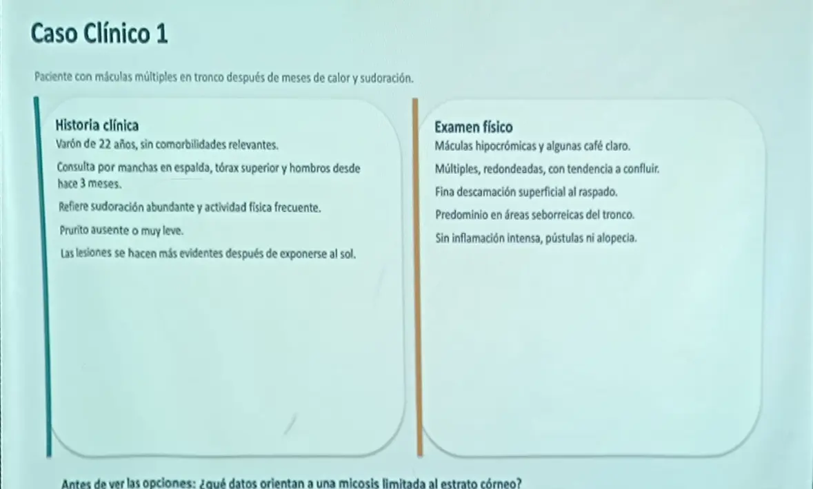
CASOS 1 Y 2Pitiriasis y tiña corporalOcho imágenes ordenadas, con las respuestas y la justificación del profesor.
IDEA CENTRAL
Primero determina la profundidad
La profundidad orienta el aspecto de la lesión, la muestra que se debe tomar y si el tratamiento será local o sistémico.
01Profundidad¿Hasta dónde llega?
02Lesión¿Cómo se presenta?
03Exposición¿Qué puerta de entrada hubo?
04Confirmación¿Qué muestra corresponde?
SUPERFICIALEstrato córneo
Se limita a la capa más externa. Suele haber poca inflamación y el motivo de consulta puede ser principalmente estético.
CUTÁNEAPiel, pelo o uña
Las dermatofitosis tienen afinidad por la queratina. La localización define el nombre de la tiña.
SUBCUTÁNEADebajo de la piel
Necesita una inoculación traumática profunda y puede afectar tejido subcutáneo, fascia, músculo o hueso.
CASO CLÍNICO 1Pitiriasis versicolor por Malassezia spp.
PACIENTE
Varón de 22 años con manchas en el tronco
Tres meses de evolución después de meses de calor y sudoración. Prurito ausente o muy leve; las lesiones se ven más después del sol.
EXAMENMáculas hipo y algunas hiperpigmentadasMúltiples, redondeadas, confluentes y con descamación fina al raspado.DISTRIBUCIÓNTronco y zonas seborreicasSin inflamación intensa, pústulas ni alopecia.KOHLevaduras + hifas cortasPatrón descrito en clase como «espagueti con albóndigas».DIAGNÓSTICOPitiriasis versicolorAgente asociado: Malassezia spp., levadura lipofílica.
CASO CLÍNICO 2Tiña corporal por Microsporum canis.
PACIENTE
Adolescente de 15 años con una placa en el antebrazo
Lesión pruriginosa de dos semanas, con crecimiento progresivo. Convive con un gato joven que presenta áreas de pérdida de pelo.
EXAMENPlaca anular de 5 cmBorde elevado y activo, descamación y aclaramiento central parcial.MUESTRARaspado del borde activoEl KOH muestra hifas hialinas septadas compatibles con dermatofitos.CULTIVOMacroconidios fusiformesAbundantes y de pared rugosa, dato usado en la identificación.DIAGNÓSTICOTiña corporal por M. canisEl contacto con el gato alopécico orienta a una fuente zoofílica.
COMPARACIÓNLos dos casos de la claseToca para cerrar o abrir.+
Pitiriasis versicolor
Tiña corporal
Nivel
Superficial
Cutáneo / dermatofitosis
Agente
Malassezia spp.
Microsporum canis
Sitio
Estrato córneo
Queratina de piel y pelo
Clínica
Máculas con descamación fina
Placa anular, borde activo y centro más claro
Pista
Calor, sudor y tronco seborreico
Contacto con gato o perro
KOH
Levaduras e hifas cortas
Hifas hialinas septadas
MICOSIS SUBCUTÁNEASLa puerta de entrada es un trauma profundo.
ESPOROTRICOSISTrayecto linfático
Se relacionó con espina de rosa, jardinería, gato o tierra. Aparece una lesión de inoculación y después nódulos en línea por el recorrido linfático.
CROMOBLASTOMICOSISLesión verrugosa que prolifera
El profesor destacó crecimiento crónico y cuerpos escleróticos o muriformes como dato diagnóstico.
MICETOMA EUMICÓTICOTumefacción e infiltración
Puede producir aumento de volumen, fístulas y granos, avanzar hacia músculo y hueso y deformar el miembro.
SUPERFICIALExamen directoRaspado y observación rápida para orientar el tratamiento.CUTÁNEAKOH + cultivoLa muestra se toma de la zona activa o del tejido afectado.SUBCUTÁNEABiopsia e histopatologíaLa profundidad exige una muestra tisular y tratamiento sistémico.
ARCHIVO DEL PROFESOR · 2 PDF
Diapositivas de Micología
Los dos soportes originales están completos y en el mismo orden que los archivos recibidos.
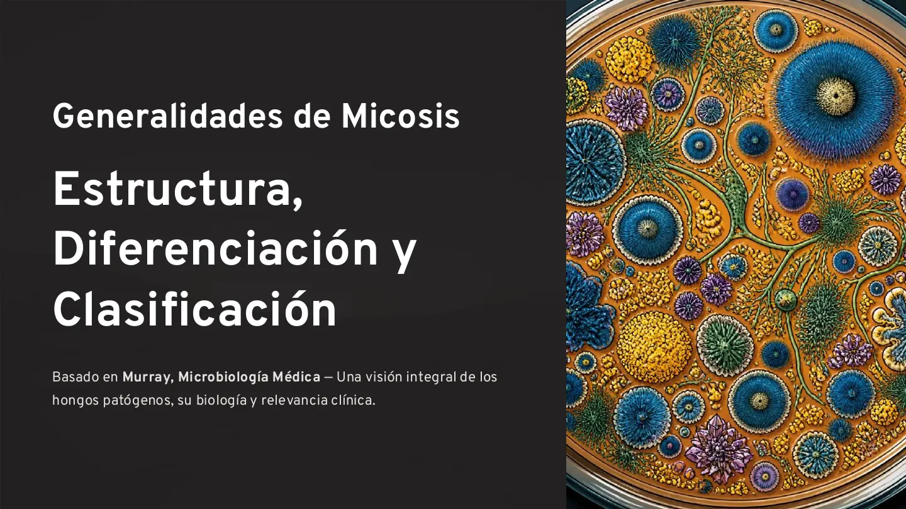
11 DIAPOSITIVAS
Micología · Generalidades
Estructura, morfología, clasificación, diagnóstico, virulencia y epidemiología.
Fuente: archivos PDF enviados por el profesor. Las tres micosis subcutáneas de la tarea se anunciaron como siguiente tema; estos dos PDF todavía no las desarrollan.
IDEA CENTRAL
Primero identifica el nivel, después el sitio
Las dermatofitosis son micosis cutáneas producidas por hongos que colonizan tejidos queratinizados. El nombre de la tiña indica la región anatómica afectada y orienta la toma de muestra y el tratamiento.
01NivelSuperficial, cutáneo o profundo
02SitioPiel, pelo o uña
03ConfirmaciónKOH, cultivo o prueba dirigida
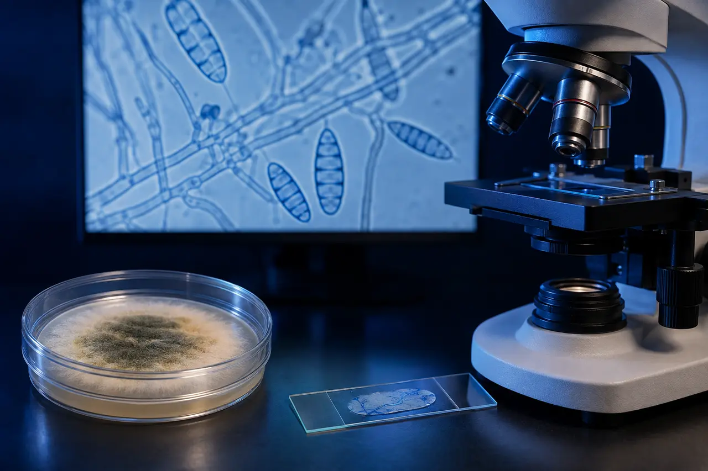
REPASO VISUALDe la colonia a la estructuraLa observación macro y microscópica completa el razonamiento clínico.
MICOSIS SUPERFICIAL
Estrato córneo o tallo piloso
La invasión se limita a las capas más externas y suele generar poca inflamación. Incluye entidades como pitiriasis versicolor y piedras; no equivale automáticamente a dermatofitosis.
Ejemplo orientador: consulta estética con pocos o ningún síntoma.MICOSIS CUTÁNEA · TIÑA
Tejido queratinizado
Los dermatofitos utilizan queratina y afectan piel, pelo o uñas. Prurito, descamación e inflamación son variables y dependen del hongo, el sitio y la respuesta del huésped.
Agentes clásicos: Trichophyton, Microsporum y Epidermophyton.
TRES GÉNEROS CLÁSICOSQué tejido puede infectar cada dermatofito.
TABLAVer tablaToca para abrir. Después, desliza a los lados.+
Género
Piel
Pelo
Uña
Clave
Trichophyton
Sí
Sí
Sí
Puede afectar los tres tejidos queratinizados.
Microsporum
Sí
Sí
No habitual
M. canis es una causa zoofílica importante de tiña capitis.
Epidermophyton
Sí
No
Sí
No invade el pelo.
No mezclar nombres:Pityrosporum/Malassezia se relaciona con pitiriasis versicolor y no integra los tres géneros clásicos de dermatofitos.
ANTROPOFÍLICOHumano → humanoContacto directo o fómites como toallas, ropa, ropa de cama, peines y calzado.ZOOFÍLICOAnimal → humanoPerros, gatos u otros animales; con frecuencia produce una respuesta inflamatoria intensa.GEOFÍLICOSuelo → humanoContacto con tierra contaminada; suele requerir exposición directa de la piel.
MAPA DE LAS TIÑASEl segundo término nombra el sitio, no una especie.
CABEZATinea capitisCuero cabelludo y pelo: descamación, pelos rotos, alopecia en placas o querion.BARBATinea barbaeÁrea de barba y bigote; puede ser folicular e inflamatoria.TRONCO / EXTREMIDADESTinea corporisPlaca anular descamativa con borde activo; el aclaramiento central puede faltar.INGLETinea crurisPliegue inguinal y región proximal del muslo.PIE / MANOTinea pedis / manuumForma interdigital, plantar o vesicular; la humedad y el calzado oclusivo favorecen persistencia.UÑATinea unguiumOnicomicosis por dermatofito. “Onicomicosis” también incluye levaduras y mohos no dermatofitos.
CASO DISCUTIDO EN CLASE
Preescolar + alopecia en placa + pelos fracturados + perro con lesión
El conjunto orienta a tiña capitis inflamatoria; una placa dolorosa, blanda o pustulosa corresponde a un querion. La exposición al perro hace pensar en un dermatofito zoofílico, especialmente Microsporum canis, pero la especie requiere confirmación.
Localizar: cuero cabelludo y tallos pilosos.
Reconocer: descamación, pelos rotos, alopecia en placas y posible adenopatía.
Muestrear: escamas y pelos afectados antes del antifúngico cuando sea posible.
Tratar la fuente: evaluar al animal con veterinaria y reducir fómites compartidos.
01Sospecha clínicaSitio, borde activo, descamación, pelo roto, uña alterada y exposición.02Muestra correctaRaspado del borde activo; pelo/escama en capitis; recorte y detrito subungueal en uñas.03Examen con KOHEl hidróxido de potasio aclara queratina y permite ver hifas septadas o artroconidios; no define por sí solo la especie.04Cultivo / identificaciónSabouraud u otro medio apropiado, morfología y pruebas adicionales para identificar el agente.
Lámpara de Wood: es una ayuda, no una prueba universal. Algunos Microsporum producen fluorescencia verde; muchas infecciones por Trichophyton no fluorescen. El azul de lactofenol se utiliza principalmente para observar estructuras de cultivos de mohos.
PIEL LOCALIZADAFrecuentemente tópico
Azol o alilamina según el diagnóstico, el sitio y la guía local. Evitar corticoide tópico aislado porque puede enmascarar y agravar la tiña.
CUERO CABELLUDO / PELOTratamiento sistémico
La tiña capitis necesita un antifúngico oral para alcanzar el folículo. El champú antifúngico es adyuvante para reducir transmisión, no monoterapia.
UÑA, EXTENSA O RECIDIVANTEConfirmar y individualizar
Puede requerir terapia sistémica; primero se confirma la etiología y se revisan interacciones, función hepática y factores predisponentes.
TABLAVer tablaToca para abrir. Después, desliza a los lados.+
Grupo
Diana principal
Lectura práctica
Azoles
Inhiben la 14-α-desmetilasa y reducen la síntesis de ergosterol.
Tópicos o sistémicos según molécula e indicación.
Terbinafina
Inhibe la escualeno epoxidasa.
Alilamina útil en varias dermatofitosis; la vía depende del sitio.
Polienos
Se unen al ergosterol y alteran la membrana.
Anfotericina B se reserva sobre todo para micosis invasivas graves; no es tratamiento rutinario de una tiña.
Griseofulvina
Altera microtúbulos y mitosis; se deposita en queratina nueva.
Opción sistémica clásica para tiña capitis, especialmente por Microsporum.
Equinocandinas
Inhiben la síntesis de β-(1,3)-D-glucano de la pared.
Se usan principalmente en micosis invasivas, no como primera línea de dermatofitosis.
Flucitosina
Interfiere con síntesis de ADN y ARN fúngicos.
Se usa en indicaciones invasivas seleccionadas y normalmente combinada; no es la respuesta a una tiña recidivante.
PREPARACIÓN CONFIRMADA · FECHA ESTIMADA
Tres micosis subcutáneas para la próxima clase
La docente anunció nuevos casos clínicos. Aprende puerta de entrada, lesión característica y dato diagnóstico de cada entidad.
01Esporotricosis linfocutáneaInoculación por plantas, suelo o arañazo/mordedura de gato; nódulos que ascienden por trayectos linfáticos.02CromoblastomicosisImplantación traumática de hongos pigmentados; lesiones verrugosas crónicas y cuerpos muriformes/escleróticos.03Micetoma eumicóticoMicetoma causado por hongos: masa subcutánea, trayectos fistulosos y granos. Diferenciarlo del actinomicetoma bacteriano.
Clase del jueves 20 de agosto de 2026: toma de muestra, examen directo, lámpara de Wood, cultivo y morfología.
Clase confirmada · 20 ago.
MICROBIOLOGÍA PRÁCTICA · 20 AGO. 2026
De la lesión a la identificación micológica
El diagnóstico práctico integra una muestra bien tomada, examen directo, fluorescencia orientadora, cultivo y descripción macro- y microscópica.
MÉTODOSKOH · Wood · lactofenol · cultivo
ALCANCEMicosis superficiales y dermatofitos
ENTRENAMIENTO20 QCM · 10 V/F · 10 casos
CURSO COMPLETO
De la lesión a la identificación micológica
El diagnóstico práctico se construye en orden. Primero se obtiene una muestra representativa; después se buscan estructuras directamente o señales orientadoras; por último se cultiva, se describe la colonia y se integra la morfología con el sitio de la lesión y los hallazgos clínicos.
01 · FASE PREANALÍTICA
La calidad del resultado depende de dónde y cómo se toma la muestra
Antes de usar el microscopio, se selecciona el material que tiene mayor probabilidad de contener el hongo. Según la lesión, puede obtenerse escama del borde activo, pelo afectado o fragmento de uña.
La preparación del sitio y el instrumental siguen el protocolo del laboratorio. La muestra debe quedar identificada con el sitio anatómico y la fecha, porque interpretar una estructura sin conocer su procedencia puede conducir a una conclusión incorrecta.
02 · EXAMEN DIRECTO CON KOH
El hidróxido de potasio aclara la queratina y deja visibles las estructuras fúngicas
En muestras ricas en queratina, el KOH facilita la observación al reducir el material que oculta el campo. El examen puede mostrar hifas, artroconidios o células levaduriformes y ofrece una primera orientación rápida.
Un resultado negativo no descarta por sí solo una micosis. La cantidad de material, el sitio elegido y la distribución irregular del hongo pueden hacer que una preparación no contenga estructuras visibles.
03 · LÁMPARA DE WOOD
La fluorescencia orienta, pero no confirma ni excluye por sí sola
La lámpara de Wood utiliza luz ultravioleta para explorar determinadas fluorescencias en piel o pelo. Algunas especies y lesiones producen un color característico que ayuda a elegir el sitio de muestreo.
No todos los dermatofitos fluorescen. Por eso una exploración negativa no elimina la posibilidad de tiña y debe interpretarse junto con la clínica, el examen directo y, cuando corresponda, el cultivo.
04 · MONTAJE CON AZUL DE LACTOFENOL
El montaje permite estudiar la arquitectura microscópica del crecimiento
El azul de lactofenol conserva y colorea elementos fúngicos obtenidos del material apropiado. Al microscopio pueden valorarse hifas y estructuras de reproducción, incluidos distintos tipos de conidios.
Esta etapa se realiza con técnica y bioseguridad porque el material proviene de un cultivo. La morfología observada aporta información, pero todavía debe relacionarse con el aspecto de la colonia.
05 · CULTIVO
El agar Sabouraud permite observar el crecimiento en condiciones controladas
El medio favorece el crecimiento fúngico. El tiempo, la temperatura y los aditivos se definen según el protocolo y el tipo de muestra; no todas las especies desarrollan la misma colonia ni lo hacen con la misma velocidad.
Durante la lectura se describen color, textura, superficie y pigmentación del reverso sin generar aerosoles. La placa no se abre ni se manipula fuera de las condiciones establecidas para la práctica.
06 · INTEGRACIÓN DIAGNÓSTICA
Clínica, examen directo, colonia y microscopía deben contar la misma historia
La apariencia macroscópica orienta mediante el color del anverso y reverso, la textura y la velocidad de crecimiento. La microscopía añade la organización de las hifas y el tipo de conidios.
Ningún rasgo aislado identifica de forma segura. La interpretación final combina el sitio anatómico, la lesión, el hallazgo directo y las características macro- y microscópicas.
07 · EJEMPLOS DE LECTURA
El patrón esperado cambia según la micosis estudiada
En la pitiriasis versicolor, la asociación de células levaduriformes con hifas cortas en el examen directo orienta hacia Malassezia. En una tiña, el sitio anatómico guía el muestreo y pueden observarse hifas septadas o artroconidios.
Las piedras se presentan como nódulos adheridos al pelo y se diferencian por su aspecto blanco o negro y por el agente implicado. Estos patrones sirven para orientar el razonamiento, no para reemplazar la integración completa.
Base exacta: transcripción académica reconstruida de la práctica del 20/08. La conversación privada ajena al contenido docente fue excluida del material público.
FICHA RÁPIDA · 5 MIN
La secuencia del laboratorio
1Muestra representativaBorde activo, pelo o uña según lesión.2KOHAclara queratina para examen directo.3WoodOrienta en especies que fluorescen.4CultivoAísla y permite observar la colonia.5LactofenolMuestra estructuras microscópicas.6IntegrarClínica, macro y micro juntas.
FICHA ULTRA RÁPIDA · 90 S
Cinco límites importantes
KOH negativo no descarta la infección.
Wood negativa no descarta una tiña.
La colonia sola no confirma la especie.
Lactofenol describe estructuras del material adecuado.
La bioseguridad continúa durante lectura y descarte.
ENTRENAMIENTO
40 preguntas de método e interpretación
MATERIAL DE LA CLASE
Ficha operativa reconstruida
PROTOCOLO DE ESTUDIOMuestra → directo → cultivo → identificaciónLa cátedra no entregó un archivo independiente para esta sesión. La ficha pública conserva únicamente el contenido académico útil y verificable.
RECURSOS IA
Contexto limpio de la práctica
Transcripción reconstruida
La práctica enlaza la selección de muestra con KOH, lámpara de Wood, montaje con azul de lactofenol, cultivo y lectura de la morfología. Se conservó solo el diálogo docente.
Perfil docente · Ruth Castillo
La tendencia observable insiste en técnica, orden del procedimiento, reconocimiento de estructuras y bioseguridad.
CONFIANZA MEDIA · OBSERVACIÓNEstilo probable de preguntas
Elegir la muestra y el sitio correctos.
Interpretar un directo o una fluorescencia.
Relacionar colonia con estructura microscópica.
Prompt personalizado
Simula una estación de laboratorio basada solo en la práctica del 20/08/2026. Dame un hallazgo por vez y pregúntame el siguiente paso, su objetivo y una precaución de bioseguridad.
OBJETIVO DE LA PRÁCTICA
Cultivar, observar y diferenciar hongos
La docente quiere que relaciones la forma macroscópica de una colonia con sus estructuras microscópicas y que expliques por qué el agar Sabouraud favorece el crecimiento fúngico.
Diferenciar levadura, moho y hongo dimórfico.
Reconocer hifas, micelio, conidios y esporangios.
Comprender la función del agar Sabouraud.
Preparar una muestra alimentaria para la próxima práctica.
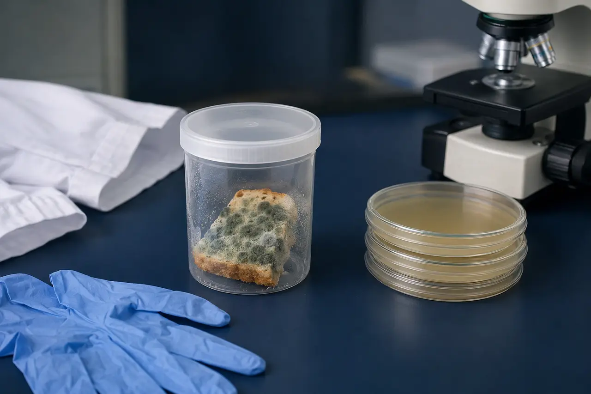
REPASO VISUALMuestra cerrada, práctica seguraTransporta el alimento sin abrirlo y manipúlalo solo con supervisión en el laboratorio.
PARA LA PRÓXIMA CLASE
Lleva una muestra sólida con moho
La tarea es personal para el Grupo 3. La profesora priorizó el pan porque permite obtener una muestra firme y fácil de manipular.
PREFERIDOPan duro con mohoDéjalo dentro de un recipiente o bolsa cerrada.ALTERNATIVASNaranja, tomate o bananaSolo si conservan consistencia sólida.OTRA OPCIÓNQueso con crecimiento visibleSeparado de alimentos destinados al consumo.EVITARMuestra líquida o deshechaNo abrir, oler ni tocar el crecimiento en casa.
01 · RECIPIENTE CERRADO02 · NOMBRE Y MUESTRA03 · TRANSPORTE SEGURO04 · ABRIR SOLO EN EL LABORATORIO
COMPARACIÓN CENTRALLa forma de crecimiento orienta la identificación.
TABLAVer tablaToca para abrir. Después, desliza a los lados.+
Forma
Organización
Aspecto habitual
Estructura clave
Levadura
Principalmente unicelular
Colonias cremosas; células redondas u ovales
Gemación; algunas forman pseudohifas
Moho
Filamentoso y multicelular
Colonia algodonosa, pulverulenta o vellosa
Hifas que forman un micelio
Dimórfico
Cambia de morfología según las condiciones
Forma ambiental y forma tisular diferentes
Con frecuencia moho a menor temperatura y forma tisular a 35–37 °C
01HifaFilamento individual; puede ser septado o cenocítico.02MicelioConjunto de hifas que constituye el cuerpo vegetativo.03Conidióforo + conidiosTallo especializado que sostiene esporas asexuales externas.04Esporangióforo + esporangioTallo que sostiene un saco donde se forman esporangiosporas.05RizoidesHifas semejantes a raíces que fijan el hongo al sustrato.06Macroconidios / microconidiosConidios diferenciados por tamaño, forma y número de células.
MEDIO DE CULTIVO
Agar dextrosa Sabouraud
Contiene peptonas, glucosa y agar. Su concentración elevada de glucosa y su pH ácido, cercano a 5,6 en formulaciones clásicas, favorecen levaduras y mohos e inhiben muchas bacterias.
NUTRIENTESPeptonas + glucosaSOPORTEAgarSELECTIVIDADpH ácidoOBJETIVOHongos y levaduras
01PesarLa demostración utilizó 10 g de polvo.02MezclarSe añadieron 100 mL de agua destilada.03DisolverAgitación con varilla evitando golpear el recipiente.04CalentarLa clase indicó aproximadamente 20 minutos.05Sembrar despuésLa inoculación y la observación microscópica continuarán en la próxima práctica.